本包逐图公开合成界面、准确来源及独立结论。ADAPTED是明确适配；MAPPED是同类容器；MISSING是缺直接原参考；FAIL保留可见问题。拍图/并包完整不等于严格全产品1:1，也不证明真实桌面。旧图、旧失败和旧源码身份不倒改；修复须另看新来源。
gap-local-demo-activity-failed-detail-bottom · 1280×800
MAPPED — 演示长失败详情620×440；正文342/594/252到底，错误码/核实原请求下一步及返回footer可读，无会话控制。仅620px原容器映射，不是真实失败恢复验收。
同类参考容器：proxy-edit；不是同名原商业执行。
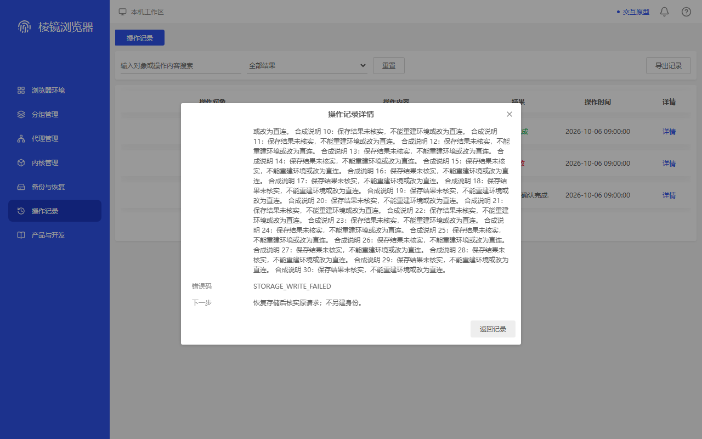
5b71a1f9544c640ee92a38b83f10fd96ea6bed89fdb5a76d2b48874ba92cd5d1
gap-local-demo-activity-filters-bottom · 1280×800
MAPPED — 演示24条活动的第一页滚底、末行和分页完整；结果文字保留未确认，demo导出入口可见。过滤/重置为保存断言，当前图仅列表原语映射。
同类参考容器：activity-list；不是同名原商业执行。
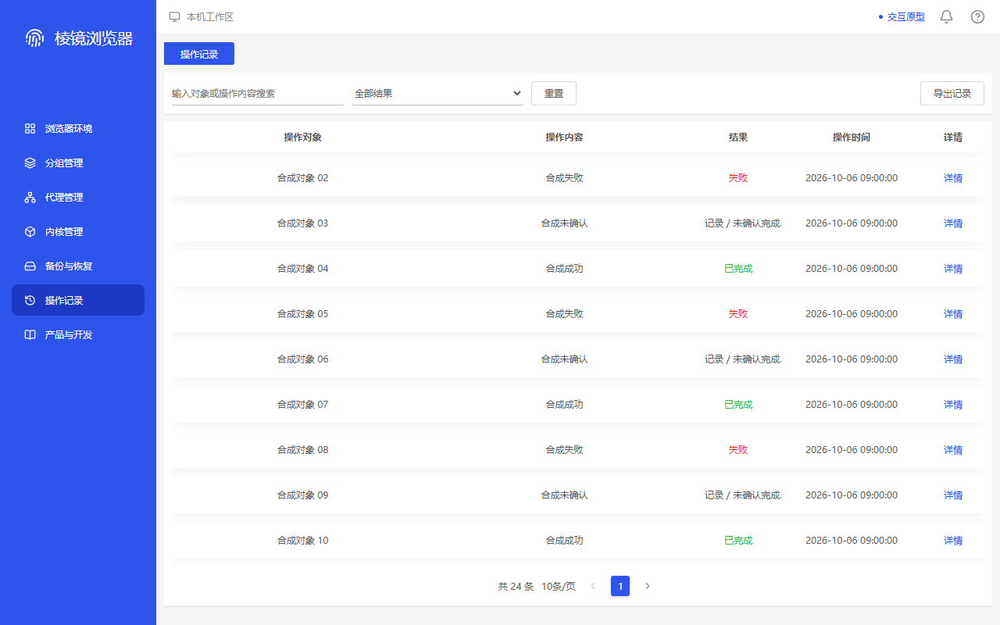
8f67f61d9c6583233cbdff5b01bf13b904ad4b24e415330d2bed742fe776dc3a
gap-local-demo-backup-chooser-focus · 1280×800
MAPPED — 500×359演示JSON上传窗，蓝头白字、未选文件、预览禁用及footer完整。保存焦点断言有效，outline为none，不声称额外焦点环或系统chooser已打开；仅文件容器映射。
同类参考容器：proxy-import-file；不是同名原商业执行。

5a39dcf5f42001ff46dae860582d5de4ffc6a55f79461a2cefcce428ac6e7300
gap-local-demo-backup-empty-search · 1280×800
MAPPED — 演示快照搜索无结果的空行、共0条分页及JSON能力边界可读；保存断言重置恢复原快照，不把搜索空态当记录删除。仅管理列表映射。
同类参考容器：proxy-list；不是同名原商业执行。
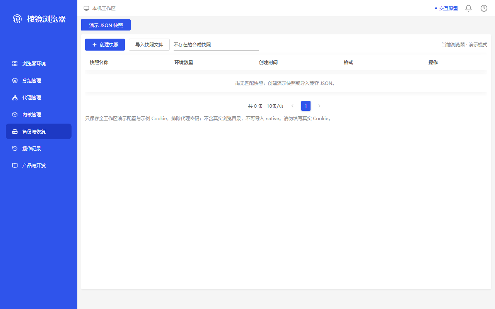
35da9bf30f2bb66b4195cf13b901f78f92b336ce93b13eb265f83141b78a6eb7
gap-local-demo-backup-file-oversize · 1280×800
MAPPED — 合成演示文件名保留，10MB限制红色说明完整，500px上传/footer未遮挡；保存断言在读取前拒绝且未恢复。仅文件选择容器映射。
同类参考容器：proxy-import-file；不是同名原商业执行。
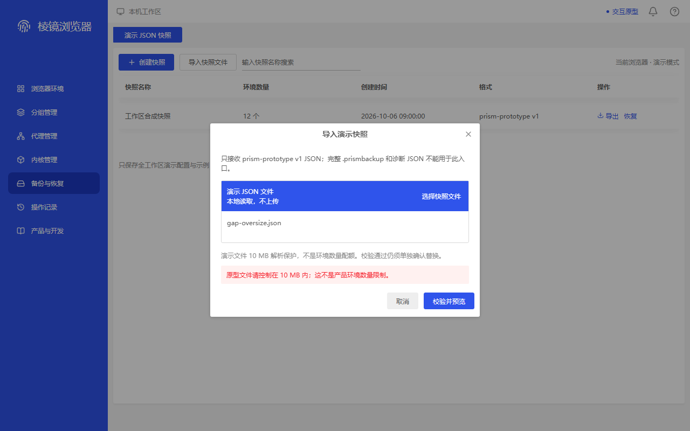
6a5d8de2c9415dd40738389cd471c3fa7b2abc2a4f2d757353b7ef912794f0d4
gap-local-demo-backup-file-read-failed · 1280×800
MAPPED — 合成File读取失败红色说明、原文件名及重试预览按钮可读，没有伪造恢复预览或成功。固定footer完整，仅500px文件窗映射，未读真实文件。
同类参考容器：proxy-import-file；不是同名原商业执行。
e7bea4082ce10a54cb497405bdd81cbc81b5d9db604e421c99358cfdd2093da2
gap-local-demo-backup-file-reading · 1280×800
MAPPED — 演示合成读取挂起，文件名与正在读取文字保留，取消/预览受busy门禁且无假预览。仅500px上传容器和当前忙态，不是文件系统读取证据。
同类参考容器：proxy-import-file；不是同名原商业执行。
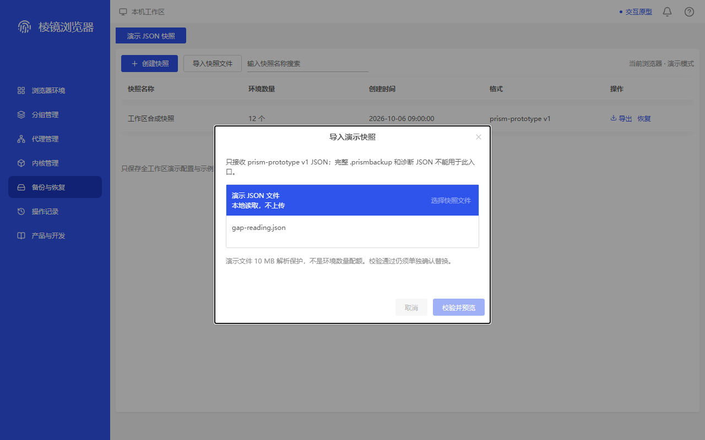
654e0349e8b45a1504c41252a0ea13ef9b236aa054f5dcc9c06c2386723f95b3
gap-local-demo-backup-file-selected-cancel · 1280×800
MAPPED — 取消合成文件选择后的提示与原已选文件名同时保留，预览入口仍可用，未读取或提交恢复；蓝色上传头/固定footer完整。仅文件容器映射。
同类参考容器：proxy-import-file；不是同名原商业执行。
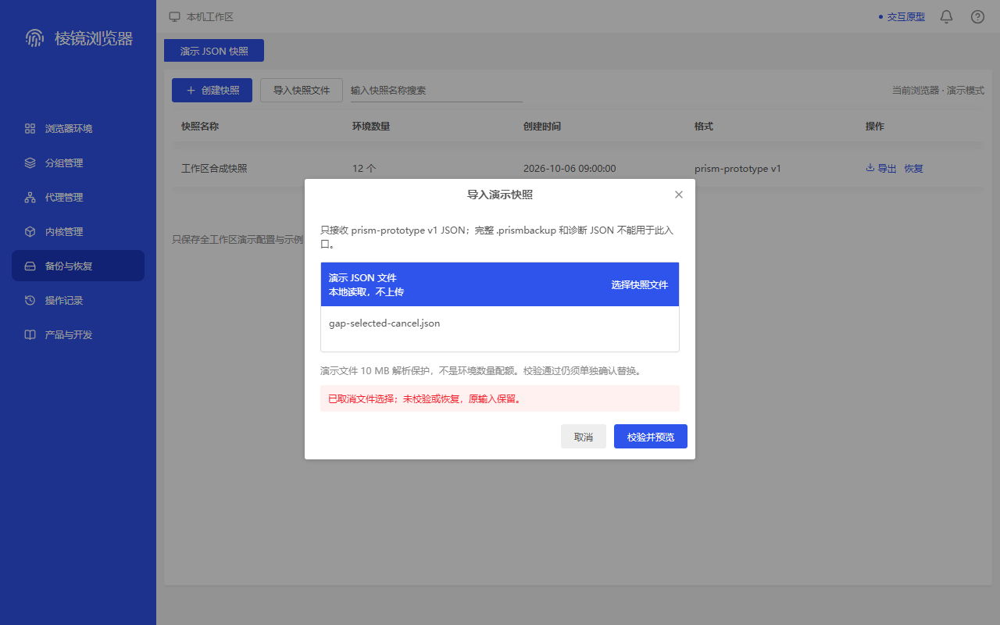
d5f2e93dd75dde06d46fedcd0159a8950b9b0e7fa953f679e310204d306cc8fd
gap-local-demo-restore-busy-union · 1280×800
MAPPED — 新实际App演示启停后定向拒绝两次完成写入，确认明确先停止3个且禁用恢复；最高124/下层122 inert、单遮罩。未恢复且持久数据不变，旧boot应为3的错误断言不改判。
同类参考容器：group-delete-confirm；不是同名原商业执行。
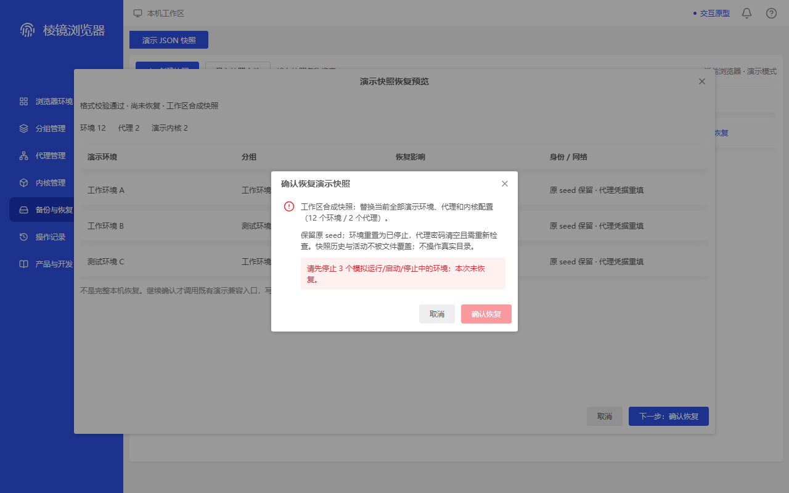
4e3a769a398fed5d91043dfef8cb0b9bf2e8a6052b711f229413865654514d06
gap-local-demo-restore-zero-preview · 1280×800
MAPPED — 1040×592合法零项演示快照只读预览，环境/代理/内核0与仍会替换配置说明可读，footer未遮挡。尚未恢复，不冒充native完整恢复；仅列表窗口映射。
同类参考容器：proxy-bound；不是同名原商业执行。
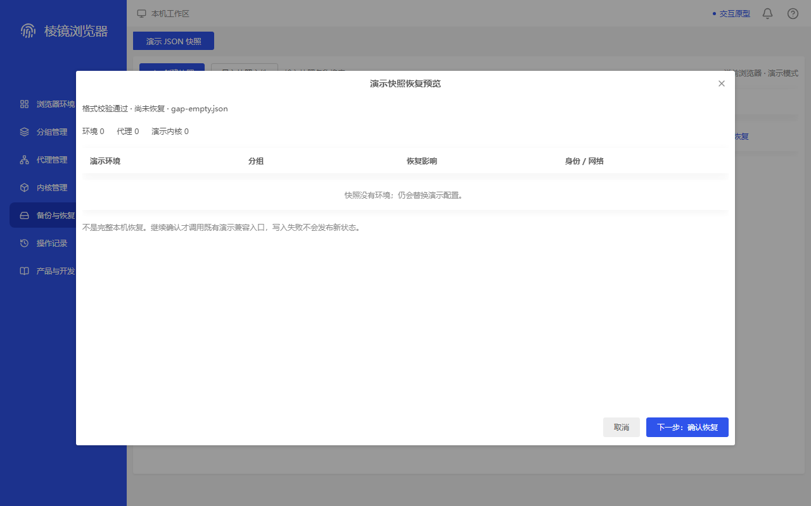
1445542cead20fbf7dec90069de6a4d5c2475fa7dbeb9dac5223e5c9f65f1cad
gap-local-native-activity-authority-no-controls · 1280×800
MAPPED — 合成会话授权末态的620px详情无核对/force控制，准确会话权限说明与返回可读。四个无控制分支是保存动作断言，不扩成四张独立原画面；仅详情容器映射。
同类参考容器：proxy-edit；不是同名原商业执行。
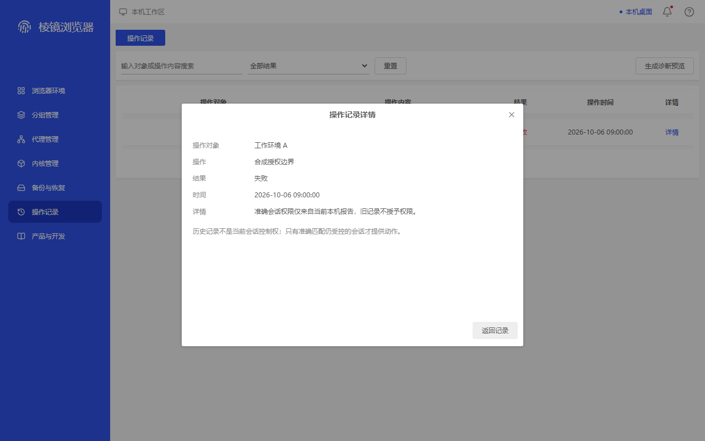
6d89d5780e1a3757d256ebbc245a57a5089affdf8c7b4250b2166d11a5c4d0eb
gap-local-native-activity-blocked-owned-force · 1280×800
MAPPED — 合成准确同会话虽canForce，同环境Reconcile在途仍使核对/force禁用，调用0；620px详情无遮挡。不是force确认或真实进程能力验收，仅授权状态/容器映射。
同类参考容器：proxy-edit；不是同名原商业执行。
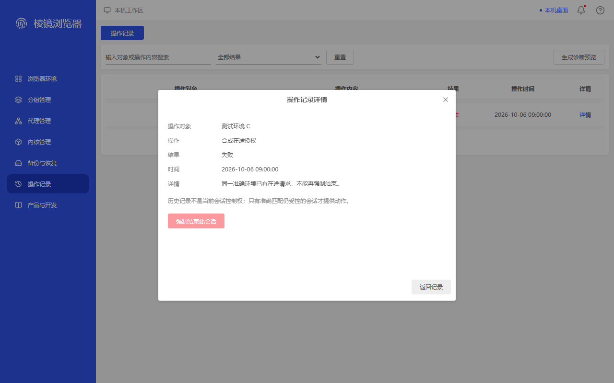
b8969d0ff346b51a1498db62ec0a10860d57715d0e79c2527439f44a16a317a3
gap-local-native-activity-empty · 1280×800
MAPPED — 合成native活动0项、空行和分页完整；保留诊断入口，没有demo记录导出。40px表头/列表原语映射，不是真实工作区日志已读取。
同类参考容器：activity-list；不是同名原商业执行。
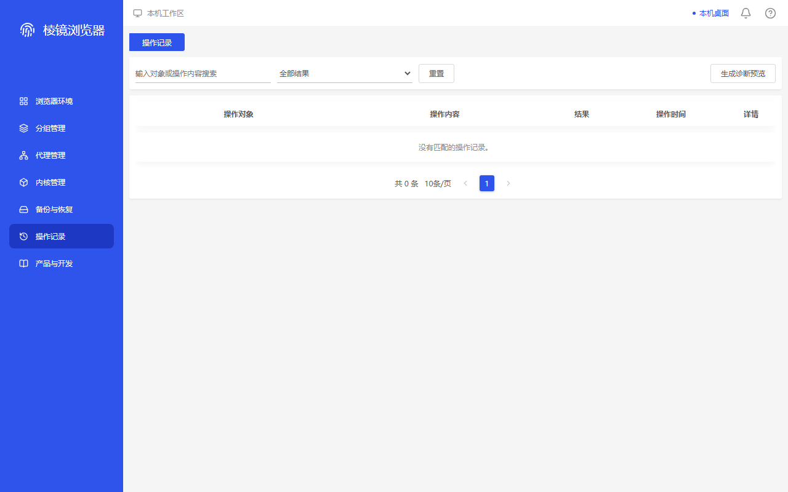
82876704c03bcf161ebd66c77a17fbbbfdc1886f7b3d5a8f63441624bbe407b5
gap-local-native-activity-failed-detail-bottom · 1280×800
MAPPED — 合成长失败详情正文342/638/296到底，错误码/核实原请求及历史非会话控制权说明可读，返回footer完整，无会话动作。仅620px详情映射。
同类参考容器：proxy-edit；不是同名原商业执行。
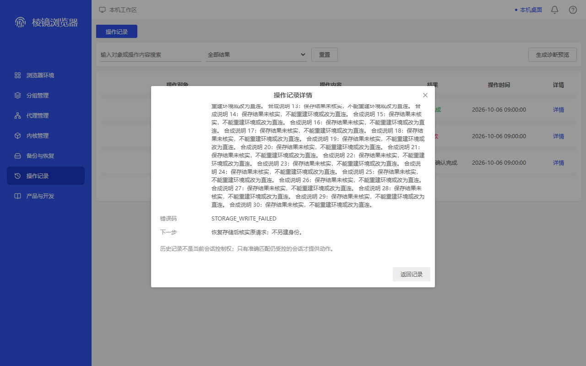
6c357a75c0103d7139a3e615ebfeff5b3a35066cb3d52e3512ee1e3e96d0c548
gap-local-native-activity-filters-bottom · 1280×800
MAPPED — 24条合成活动第一页滚底末行/分页可见，失败与未确认文字不同，native尾栏为诊断而非demo导出。过滤/重置为保存断言；仅活动列表映射。
同类参考容器：activity-list；不是同名原商业执行。
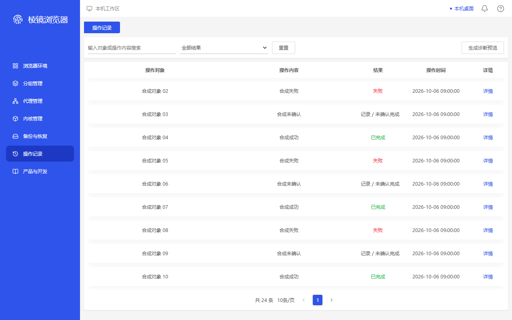
375b29d4b398aff4dfafa309808a20be43bd997e7406b68c1a1965af6109ab92
gap-local-native-activity-page-two · 1280×800
MAPPED — 合成活动第二页11–20与第2页分页相符，结果仍区分失败/未确认，末行不被分页盖住。仅分页列表原语，不是全部24条同时可见或真实日志验收。
同类参考容器：activity-list；不是同名原商业执行。
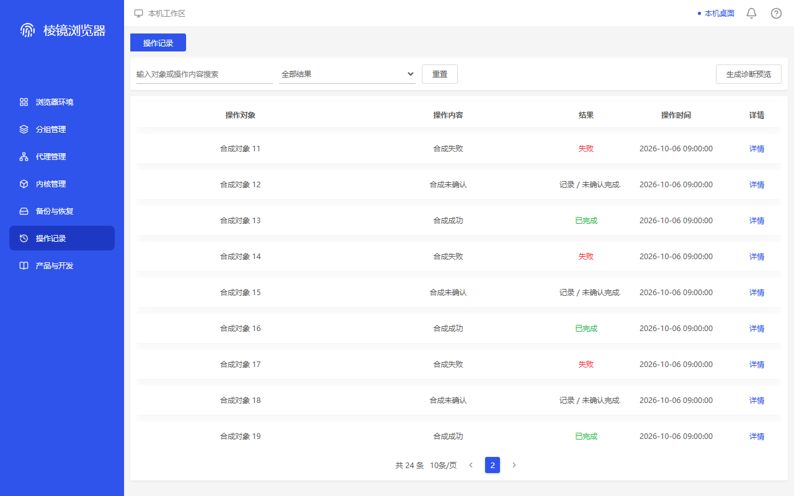
e042cc6e1993e780db1744de4a6cd872c956090c39555c80b8f92618b0942a6b
gap-local-native-backup-admission-refused · 1280×800
MAPPED — 合成PROFILE_BUSY受理拒绝仍在500×340备份表单，范围/目标/停止授权与红色失败说明保留可编辑；没有新成功任务。仅原group-add短表单映射。
同类参考容器：group-add；不是同名原商业执行。
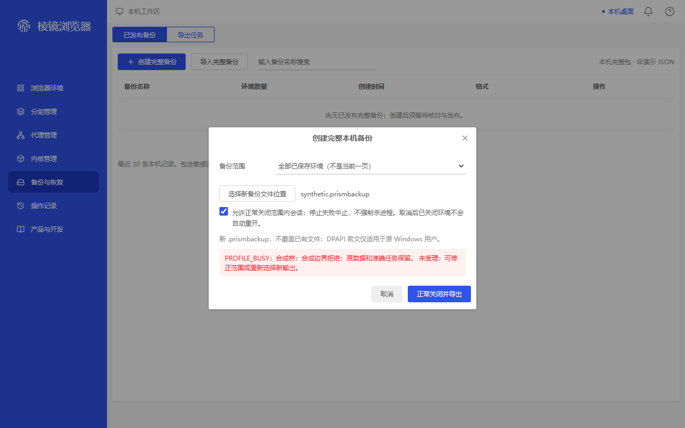
c32eaefde38e2589cab4430e8951595067dc719af32e4c19db44d4cea73322d4
gap-local-native-backup-cancel-requested · 1280×800
MAPPED — 400px合成备份结果仍写任务未确认/取消已请求，发布否，非取消完成或成功；footer完整。仅批次结果块映射，无文件写入证据。
同类参考容器：batch-progress-fixture；不是同名原商业执行。
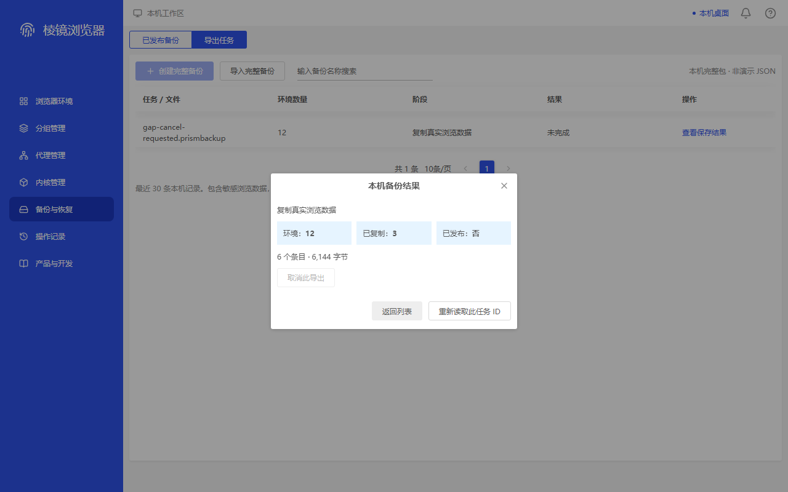
1d046e840714420fd80088d8184ae8cd0fcab53578a97ff348c22b4b25453d5b
gap-local-native-backup-chooser-focus · 1280×800
MAPPED — 500×359合成本机包导入窗，白色选择按钮、未选文件/禁用预览与footer完整；focused保存断言存在、outline none，不声称新焦点环或真实chooser。仅上传容器映射。
同类参考容器：proxy-import-file；不是同名原商业执行。
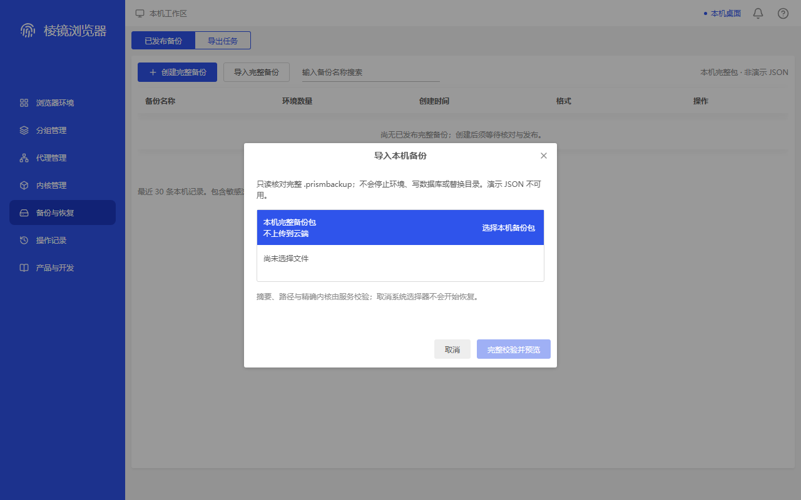
1a670fadc09d6afec432312b91dcb3f5013a64318986a8447c89cb87fa9802e5
gap-local-native-backup-destination-cancelled · 1280×800
MAPPED — 合成目标取消后仍尚未选择，取消提示和正常停止授权可读，导出主按钮禁用且调用0。零选定ID option的disabled来自DOM保存断言，不从折叠select猜测；仅短表单映射。
同类参考容器：group-add；不是同名原商业执行。
df081100cf943999aad1719d55449ab49c9f690a08b77304a6aadc3e5fd3a944
gap-local-native-backup-destination-missing-consent · 1280×800
MAPPED — 合成目标已有而正常停止授权未勾，500px主导出仍禁用，范围未变、调用0；无ID选项仍DOM disabled。仅停止授权门禁/表单映射，不是真实chooser或备份。
同类参考容器：group-add；不是同名原商业执行。
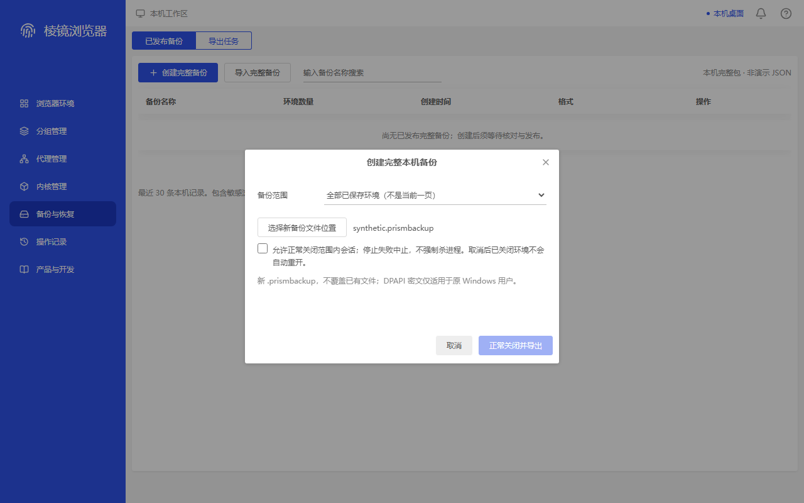
1f3c5db73b6b7cbc0027e71edd80ad191c3116ac1ce809189aaf630db9a6f103
gap-local-native-backup-destination-refused · 1280×800
MAPPED — 合成目标边界拒绝的红色提示、原范围/尚未选择及停止授权保留，主导出禁用、调用0；未把工具option断言错误变成产品成功。仅500px表单映射。
同类参考容器：group-add；不是同名原商业执行。
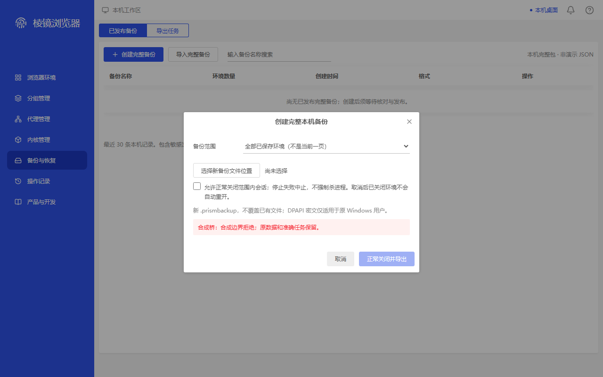
704f64d07c66e3f437f0ecf0188af30e2a854252695af6c2ca7369b61ec41236
gap-local-native-backup-incomplete-report · 1280×800
MAPPED — 合成completed但缺发布事实被拒绝，400px结果保留原任务并写待核实、BACKUP_RESULT_UNCONFIRMED可读；未报告完整备份成功。仅结果原语映射。
同类参考容器：batch-progress-fixture；不是同名原商业执行。
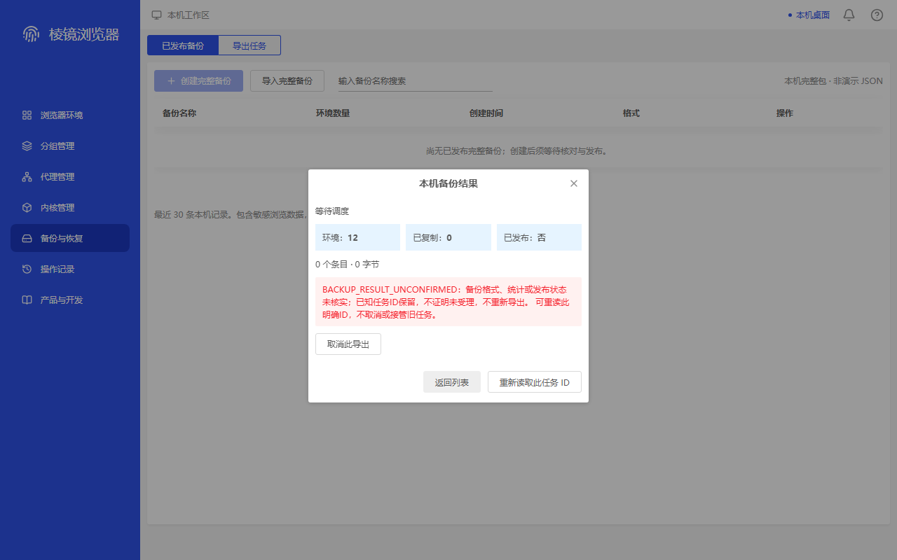
1016b7b6f3061e53e3a60026e2b779749b9aaf76b13b7a192c3f3b9250f54cd1
gap-local-native-backup-interrupted · 1280×800
MAPPED — 合成备份中断与BACKUP_INCOMPLETE说明可读，发布否、原结果读取入口/返回未遮挡，没有绿色总体成功。仅400px批次结果块映射，非真实包验收。
同类参考容器：batch-progress-fixture；不是同名原商业执行。
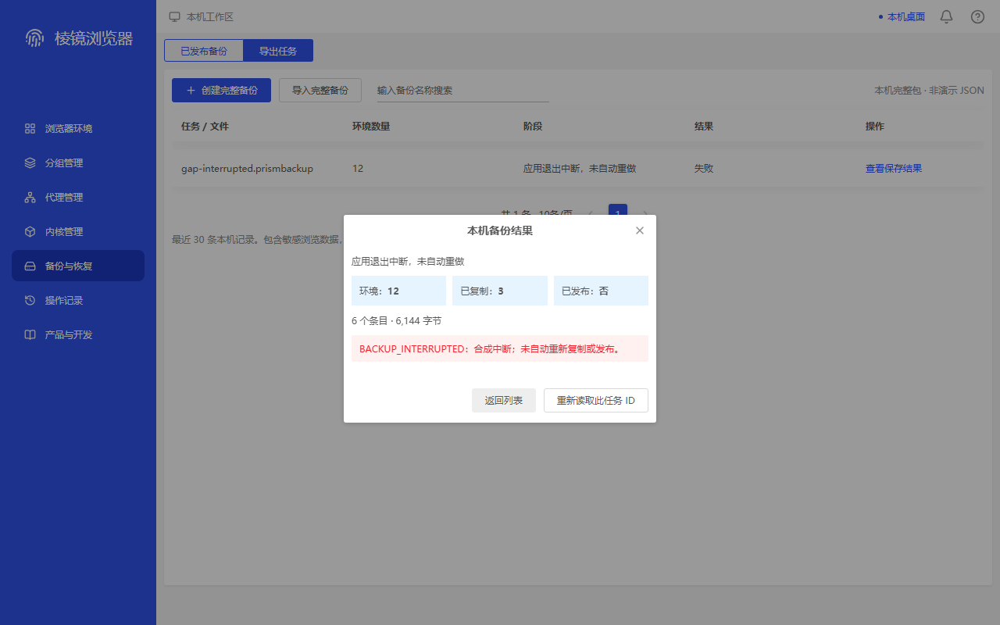
ce8d910dad340a446308d55c0359f64bfc88de89ef8009764ba0bd18bf2d762a
gap-local-native-backup-publication-pending · 1280×800
MAPPED — 合成published为是但persistencePending仍任务未确认，取消禁用并保留原结果读取；发布局部事实不等于总体成功。400px结果/固定footer映射，不是文件发布证据。
同类参考容器：batch-progress-fixture；不是同名原商业执行。
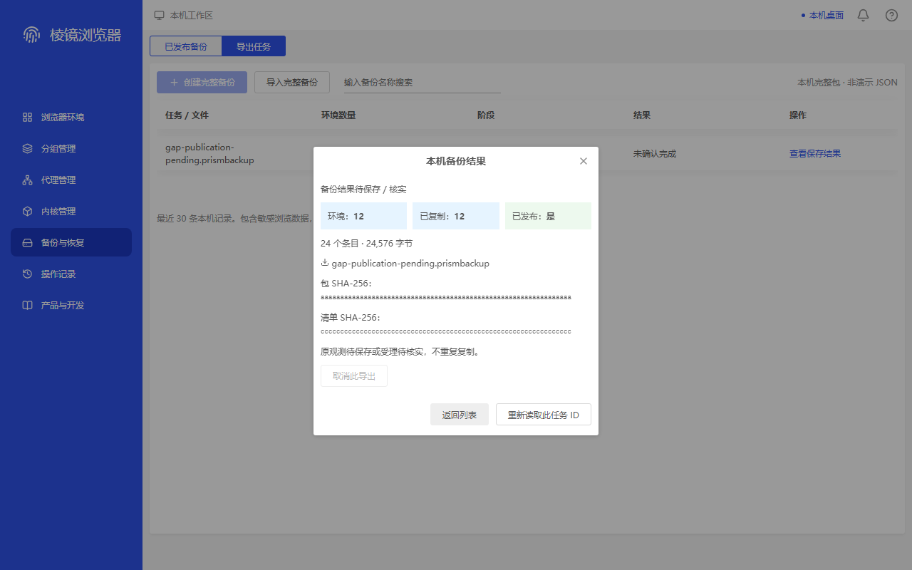
936aa5c090565359d35dd858994fe3c03937c10b5f1eb2dda707c05d0e5060eb
gap-local-native-backup-publishing · 1280×800
MAPPED — 合成正在发布、发布否和取消禁用的许可不同于已完成，400px结果返回/原结果读取可达。仅结果块及在途状态映射，不是真实文件写出成功。
同类参考容器：batch-progress-fixture；不是同名原商业执行。
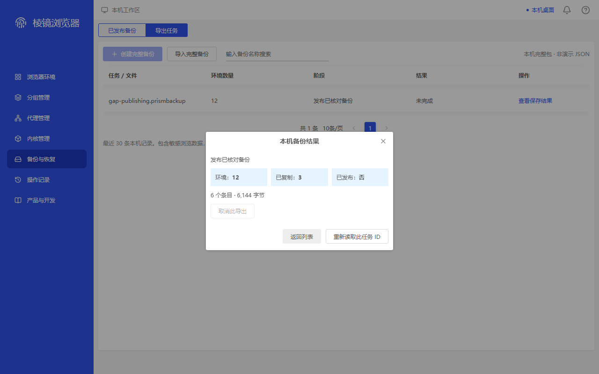
f69df82b75d66aa8dd4e71bd4e67986f0aed36bcdd79bfb59f0e014fd0b8718f
gap-local-native-backup-read-failure-retry · 1280×800
MAPPED — 当前PNG是同任务读取失败再次注入后的红色错误，返回及读取原结果可见；保存断言先重读恢复且无再导出，但不把最终失败图说成成功图。仅400px结果映射。
同类参考容器：batch-progress-fixture；不是同名原商业执行。
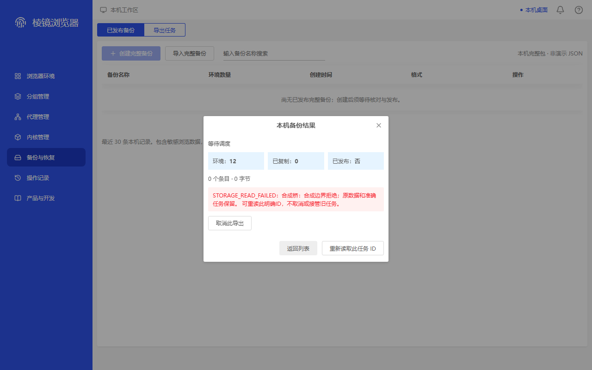
55e37b09456d654ab2be97f855e649bcafc8466b9f7744bab48e431447cb5b99
gap-local-native-backup-storage-pending · 1280×800
MAPPED — 合成任务记录待保存、发布否和STORAGE_WRITE_FAILED提示完整，仍是未确认结果；footer不遮尾部。仅400px结果原语映射，不是真实存储恢复。
同类参考容器：batch-progress-fixture；不是同名原商业执行。
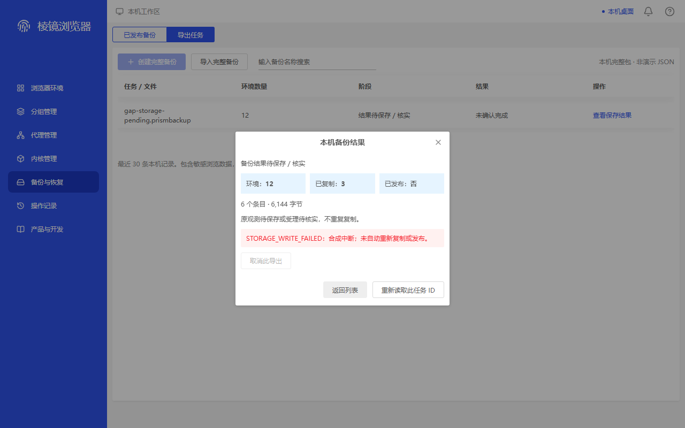
9478c18f3456bf83f27edd76c00073ae1333f321aee3094412727ab3e11282ae
gap-local-native-backup-tasks-dense-bottom · 1280×800
MAPPED — 合成12个导出任务第一页10项的表体540/640/100到底，末任务10和分页可见，固定表头正常；未伪造已发布包。仅密集管理列表映射。
同类参考容器：proxy-list；不是同名原商业执行。
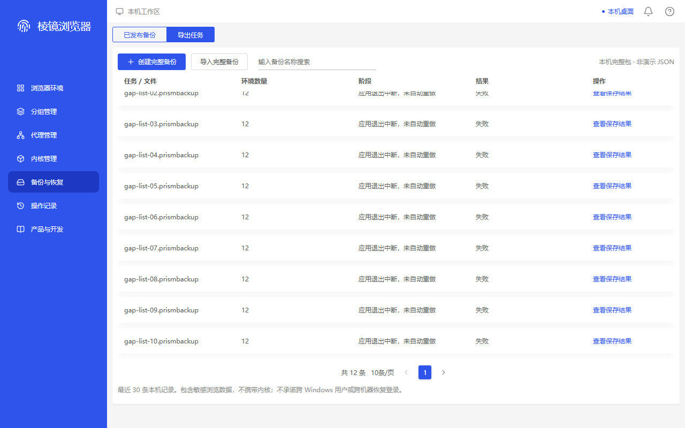
a68dd363a6c69d33f18ec19cb2218e218a36e1d2ac78a35f0d187aced33387f4
gap-local-native-backup-tasks-empty · 1280×800
MAPPED — 导出任务标签选中、合成0任务空提示和分页完整，与已发布备份空文案不同。仅列表空态原语映射，不是所有本机备份任务已核实。
同类参考容器：proxy-list；不是同名原商业执行。
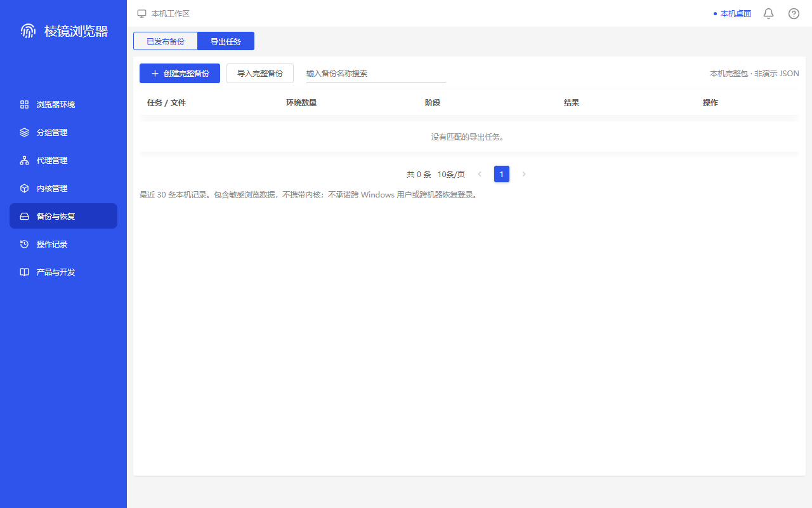
9270a75cf6626393eb89651bb2f3dac263ff98f5c6784f65e121620a95387f27
gap-local-native-backup-tasks-nonmatch · 1280×800
MAPPED — 12条合成导出任务的搜索不匹配空态，查询文字/任务表头/共0条分页一致，不是删除原任务。仅管理列表映射，无新导出提交。
同类参考容器：proxy-list；不是同名原商业执行。
1473fe558e0ea63ca21afb16a9b076c07120034c1c9ac105ebb095aa817590f1
gap-local-native-backup-tasks-page-two · 1280×800
MAPPED — 合成12个任务的第二页仅11/12，分页第2页与共12条一致，读取结果入口完整；不是已发布完整包。仅分页列表原语映射。
同类参考容器：proxy-list；不是同名原商业执行。
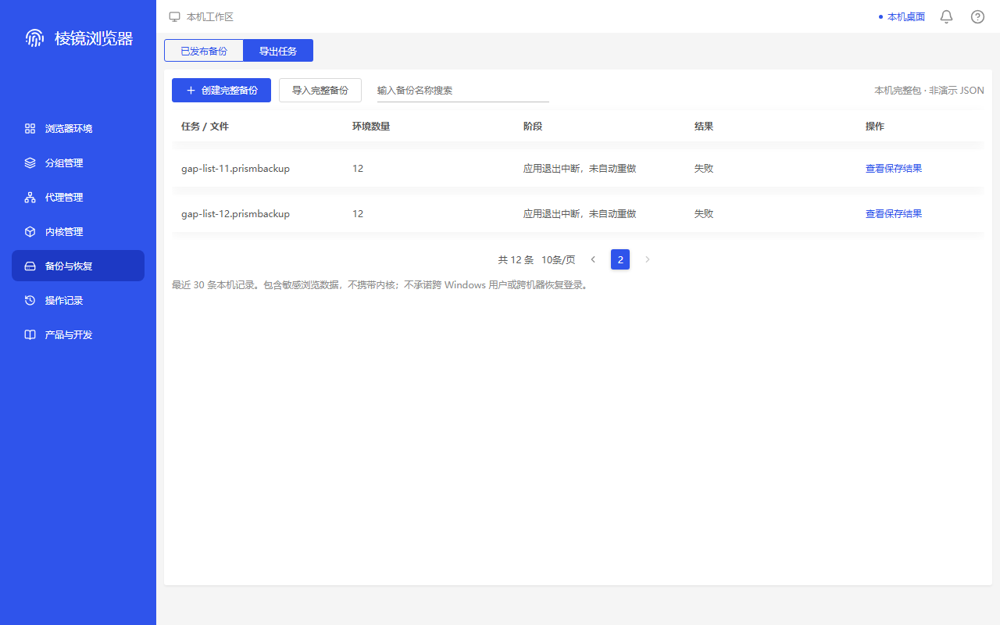
ad3e467c7610943087eb42fe2518dc45097cb24506b5969b5348d7507bc2f51b
gap-local-native-diagnostic-dense-bottom · 1280×800
FAIL — 末行补证不足：外正文482/606/124到底且footer y640完整，但内层摘要仍显示任务1–9/部分10，未见内核20和遗漏7。220个li不证明末行可见；需另补内层滚底PNG，非已证明产品源码缺陷。
同类参考容器：proxy-edit；不是同名原商业执行。
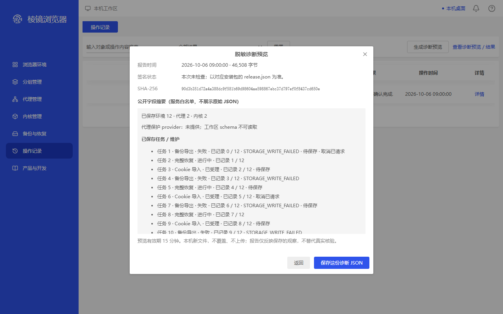
dbbc73ba656932a9d7370d6fe2384bd5773528225eecaff638e348036556f1e0
gap-local-native-diagnostic-generating · 1280×800
MAPPED — 合成Diagnostics.Preview挂起，620×580窗只显示正在生成和安全范围，未造报告、保存禁用；返回/footer完整。仅诊断容器/忙态，不是native诊断完成。
同类参考容器：proxy-edit；不是同名原商业执行。
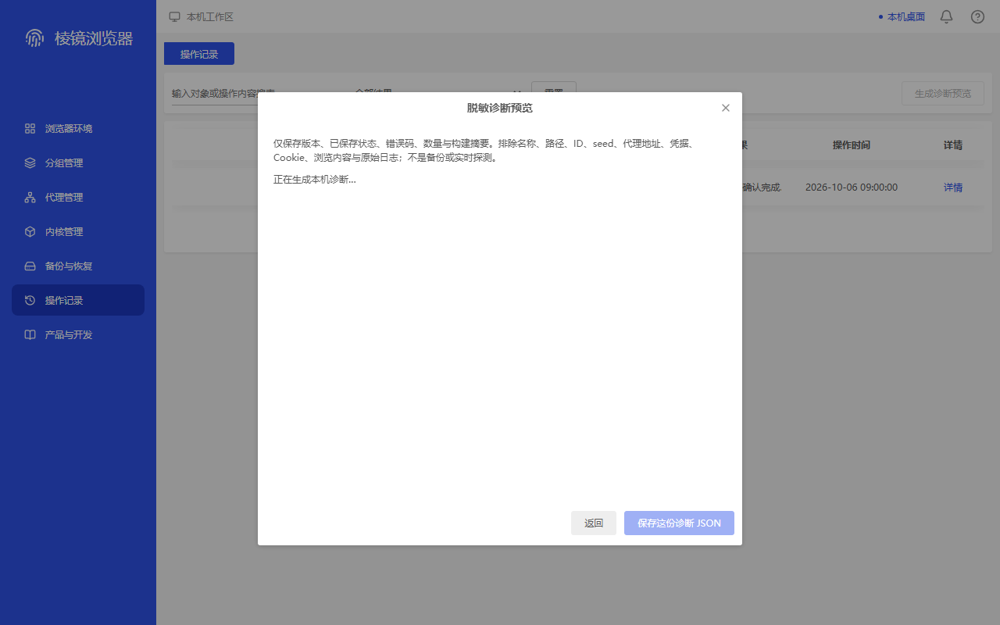
8cbb8176797047cbc9accb574bbe9eaf50592978318053f60b64ad238d8dcef5
gap-local-native-diagnostic-original-retry-end · 1280×800
MAPPED — 最新单案例协议下原报告重试后显式结束，400px结果保留旧文件可能已发布，核实入口移除、查看预览保留；无新报告/chooser。仅结果映射，旧工具拒绝不改成历史通过。
同类参考容器：batch-progress-fixture；不是同名原商业执行。
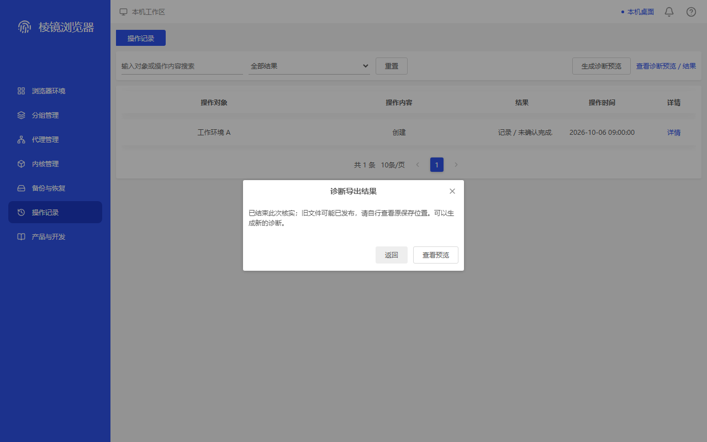
761cc3b0e9f8aed6c3c9c9a4c267d9007c2fd6d0b608077d4ee392da3980ef27
gap-local-native-diagnostic-preview-error · 1280×800
MAPPED — 合成预览STORAGE_READ_FAILED红色说明完整，报告未造、保存按钮禁用，620px窗footer可达。仅安全失败投影与容器映射，不是真实存储故障或修复验收。
同类参考容器：proxy-edit；不是同名原商业执行。
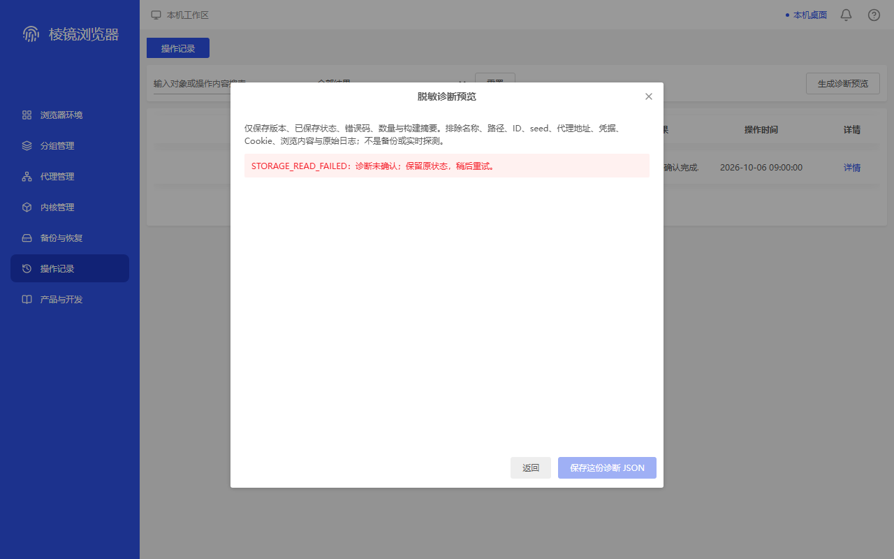
8d4f76b27e2fde6f93b99ae8f3b9f1c80719927c23bda7e03f3277d4be5a1015
gap-local-native-diagnostic-save-busy · 1280×800
MAPPED — 合成原诊断Export挂起，400px结果明确原请求待核实，核实与结束按钮禁用而返回保留；未重复生成报告或保存。仅结果忙态映射，非文件写盘证据。
同类参考容器：batch-progress-fixture；不是同名原商业执行。
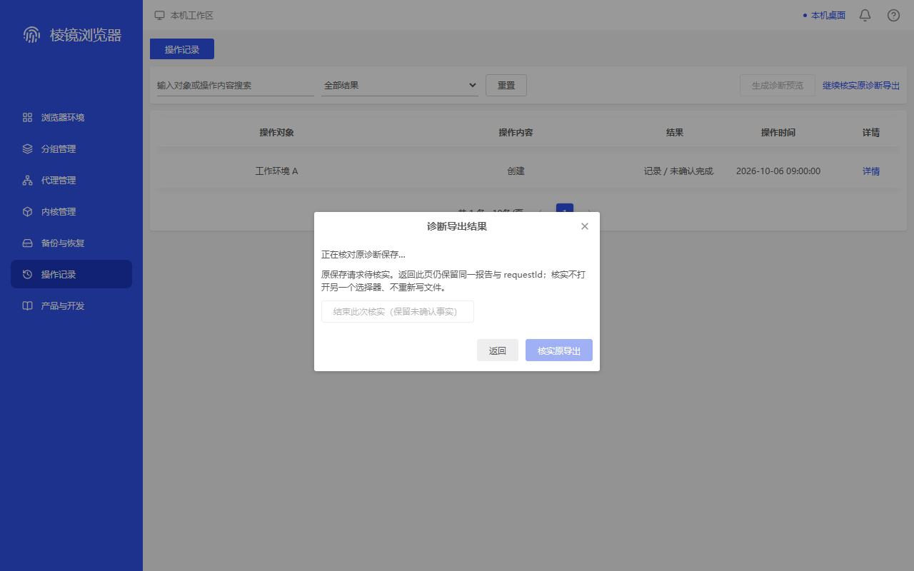
70693de65c877095227899fb29b5f379c5f9c959cbd65255ca9c2964fae6fa50
gap-local-native-restore-add-only-ack · 1280×800
MAPPED — 合成只新增2项/覆盖0/凭据0，400×202确认仅正常停止授权；已勾选可提交但ApplyRestore=0。最高124/下层122 inert、单遮罩，短正文有依据；仅确认映射。
同类参考容器：group-delete-confirm；不是同名原商业执行。
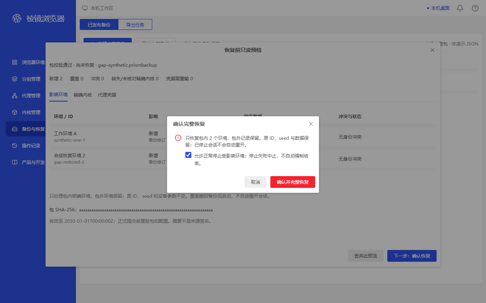
f964144017b126d70d0cf11480c8257f09d188f3373605df5bb7d541a67ce1a8
gap-local-native-restore-cancel-requested · 1280×800
MAPPED — 合成恢复仍新旧目录已准备、取消已请求而未完成，400px统计明确未完成，重复取消受门禁、返回可达。仅结果块映射，不是回滚或目录操作验收。
同类参考容器：batch-progress-fixture；不是同名原商业执行。
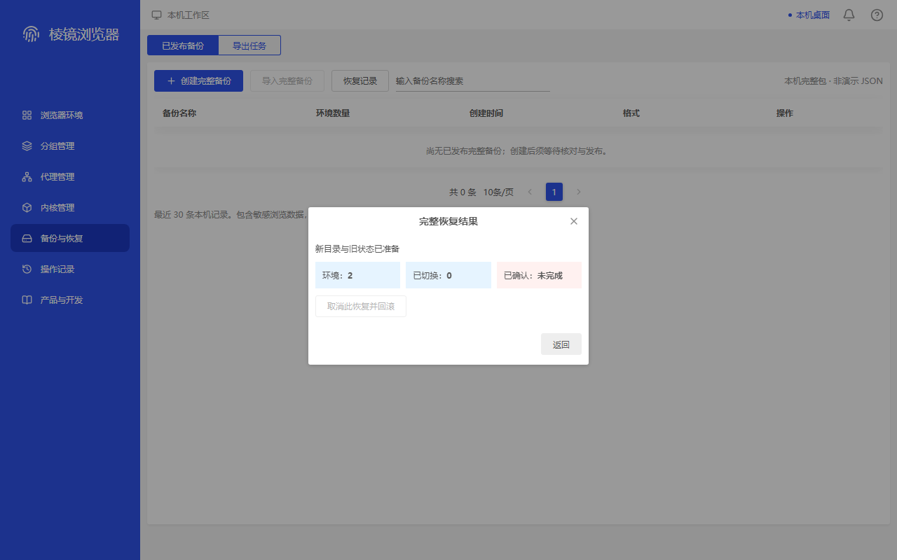
1e875ce4dcefd748dd8652dcb74387c011df48e6ea6c34971b3b6636761bce74
gap-local-native-restore-cancelled · 1280×800
MAPPED — 合成已取消恢复仅有未完成统计和返回，没有继续取消或总体成功。400px结果正文/footer完整；仅明确取消终态映射，非真实恢复/回滚完成证明。
同类参考容器：batch-progress-fixture；不是同名原商业执行。
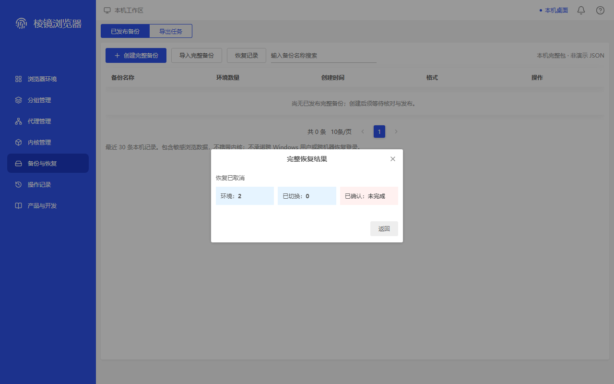
5d90d911eb50a278a30f4e9882bcfd045e5e558c2c4bfd3cd3a41a72d9888545
gap-local-native-restore-credentials-bottom · 1280×800
MAPPED — 1040px合成凭据预检内表230/1626/1396、正文494/539/45均到底；末项与重新输入红色指引可读，下一步禁用，无凭据值/恢复调用。仅列表窗映射。
同类参考容器：proxy-bound；不是同名原商业执行。
319314dec4983ae6f303bca91f642dac7ff0ff00d53f1c7e4b42cfef8564e1fa
gap-local-native-restore-credentials-top · 1280×800
MAPPED — 合成凭据预检top展示类型/恢复策略和前段重输/未携带状态，下一步禁用，不回显凭据；top不冒充末行，另有bottom补图。仅1040px列表容器映射。
同类参考容器：proxy-bound；不是同名原商业执行。
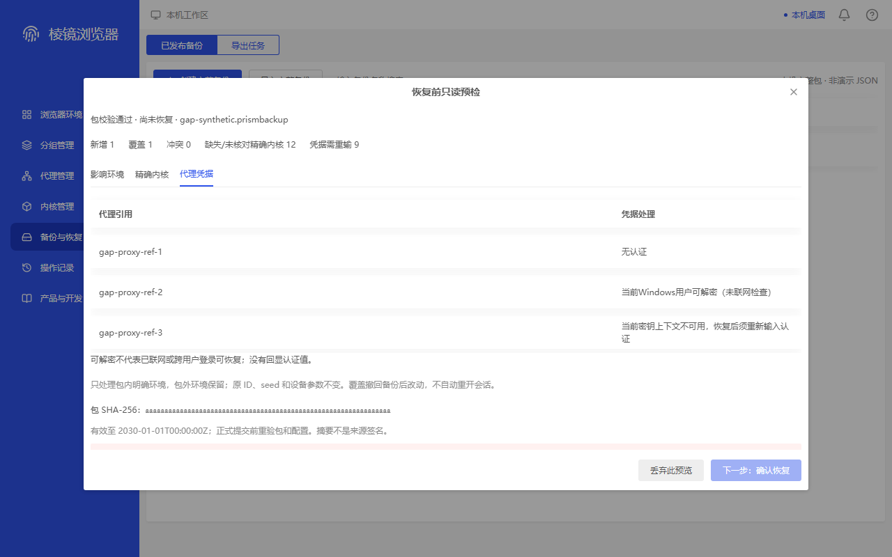
537d27d821ab2f30433256e518e289201606cd7da0221793db0e2276f85f0c3d
gap-local-native-restore-discard-unconfirmed · 1280×800
MAPPED — 合成丢弃预检结果未知保留原1040px影响页、SOURCE_INVALID说明与丢弃/关闭入口，下一步冻结；不是取消已确认或恢复成功。仅预检失败状态映射。
同类参考容器：proxy-bound；不是同名原商业执行。
16e187176a37ae42dcad2048761dc77d836b6ceee7f73720f0c1341d2755c95f
gap-local-native-restore-each-required-ack · 1280×800
MAPPED — 合成400×262确认的覆盖/凭据重输/正常停止三个勾选完整；逐个撤回门禁为保存断言，全选截图仍ApplyRestore=0。下层inert、单遮罩；仅确认映射。
同类参考容器：group-delete-confirm；不是同名原商业执行。

c5931c8b7f4dd0b339e9c03768f67dbdc87d2263fd505dc57aecb307a5e8edbb
gap-local-native-restore-empty-impact · 1280×800
MAPPED — 合成只读预检0影响、0–0/0、包中没有影响环境与原ID/seed说明可读，footer完整；ApplyRestore=0，不造新身份。仅1040px空列表窗口映射。
同类参考容器：proxy-bound；不是同名原商业执行。
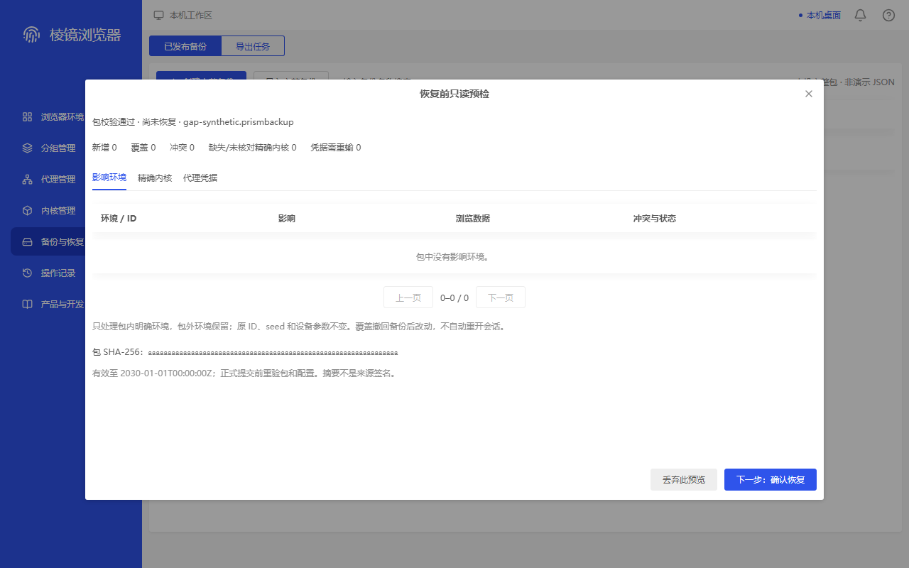
23e7ca4677691fcb1bfc7074ccc9b1901433e6c548c67f19be1fe5c26b01b3f6
gap-local-native-restore-finalized-unconfirmed · 1280×800
MAPPED — 合成已切换2但完整提交仍待核实、已确认未完成，维护条保留、取消禁用且原任务收尾可用。仅400px结果映射，不用局部切换数宣布完整恢复成功。
同类参考容器：batch-progress-fixture；不是同名原商业执行。
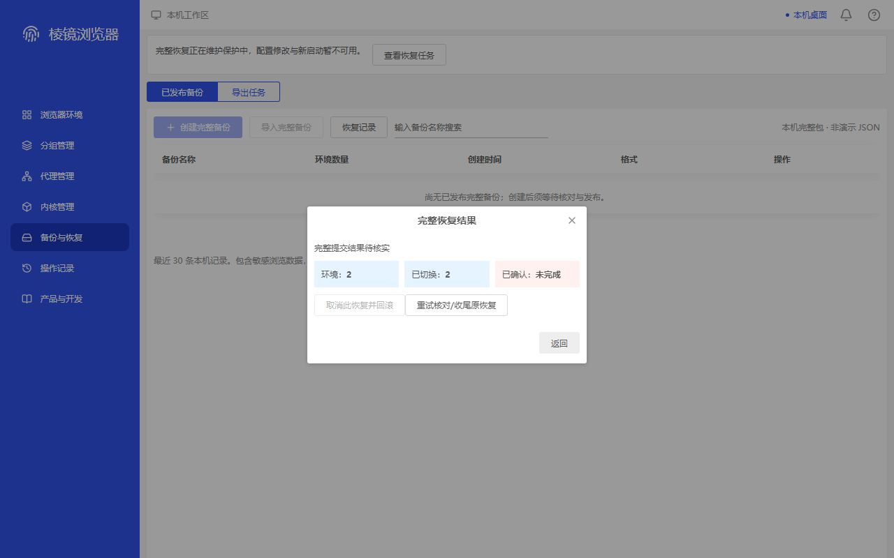
c69ec18d82b70ef6e970d2522dccd5176da1a4c058465716d9ce2f816b7cf109
gap-local-native-restore-history-dense-bottom · 1280×800
MAPPED — 合成最近30条历史内表230/1800/1570到底，第27–30项和不接管后续请求/会话说明完整，返回固定；未派发恢复/取消。仅1040px历史列表窗映射。
同类参考容器：proxy-bound；不是同名原商业执行。
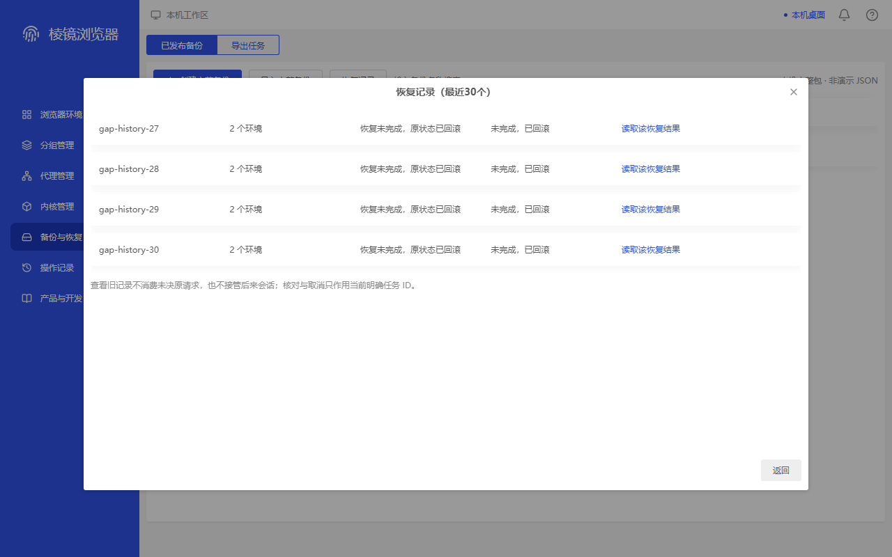
00b3558b6c81a8cb6cb5f63de80591181b9ace796256a1d73203b6f62d878ddc
gap-local-native-restore-history-empty-retained · 1280×800
MAPPED — 合成服务最近历史变空，1040px窗口显示暂无已读取记录，原已观察任务仍由保存状态持有；空表不是删除/消费原任务。返回和说明完整，仅历史空态映射。
同类参考容器：proxy-bound；不是同名原商业执行。
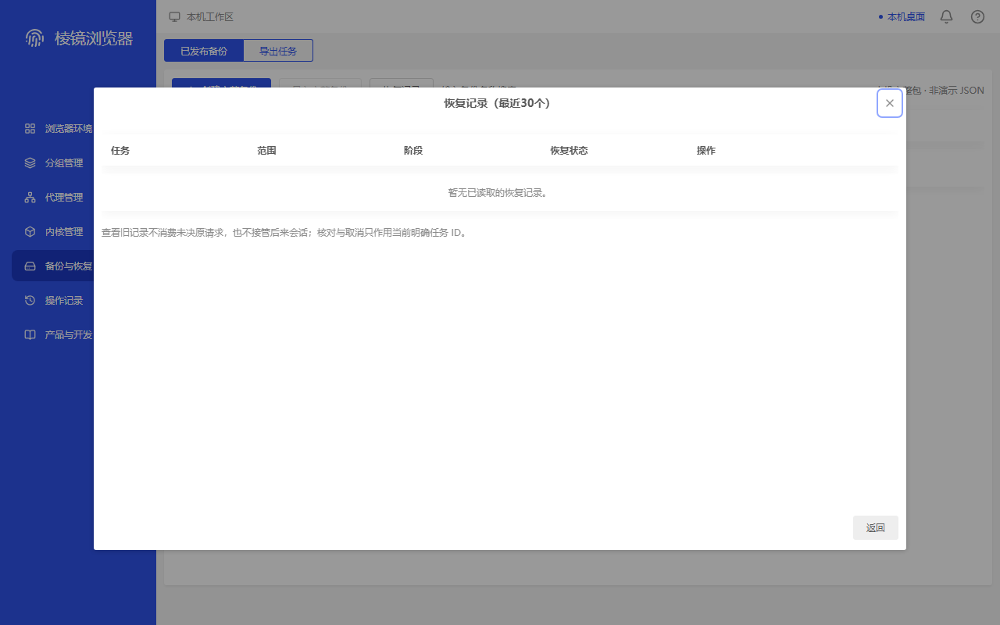
86e226988165d112afcc7bb7e6601794e8cb156a3712b61642bf5918d05afeeb
gap-local-native-restore-kernels-bottom · 1280×800
MAPPED — 合成内核内表230/1452/1222、外正文494/511/17均到底，未绑定/缺失/无法核对/同摘要映射末项及补齐指引完整；下一步禁用，非安装证明，仅预检窗映射。
同类参考容器：proxy-bound；不是同名原商业执行。
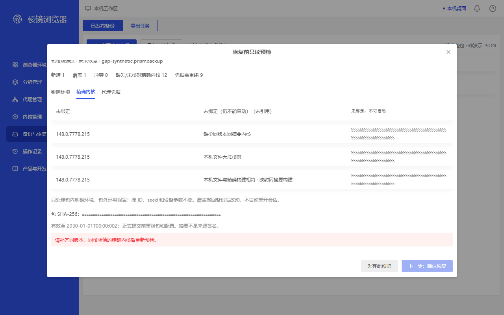
1f4456e0e8078a5fc7bed85d8c348c7604b98aa988ddd4ab0ba77b8ecc172179
gap-local-native-restore-kernels-top · 1280×800
MAPPED — 合成内核top展示精确版本/本机核对/主程序摘要列和前三类状态，长摘要换行未横裁切，下一步禁用；另有bottom，不将top当末行或签名已验。仅预检窗映射。
同类参考容器：proxy-bound；不是同名原商业执行。
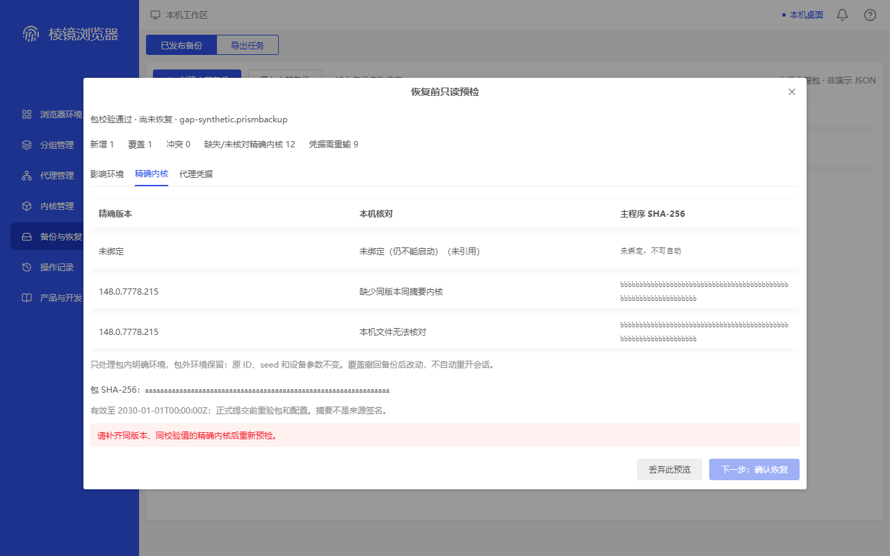
31658d52ada90bad868bc04477f1a0c2ecb478e6c68e5c485ef5d29347bd6aec
gap-local-native-restore-not-accepted · 1280×800
MAPPED — 合成RESTORE_NOT_ACCEPTED明确拒绝，与未知受理不同；400px结果保留返回影响确认而无接管旧请求入口，原状态保留。仅结果容器映射，非真实恢复结果。
同类参考容器：batch-progress-fixture；不是同名原商业执行。
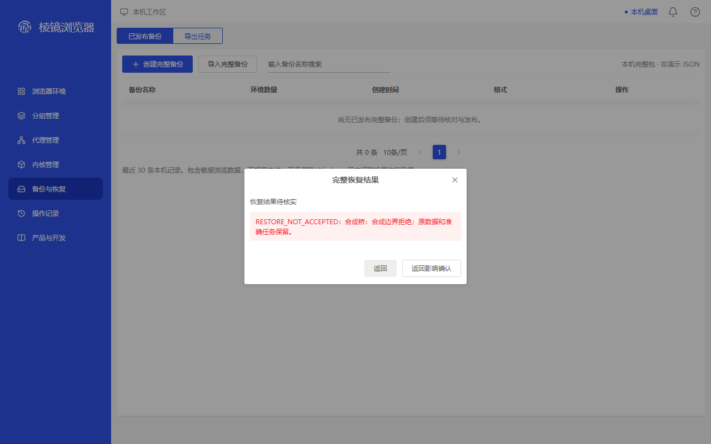
21d254ec51df095d0b9bc48043b322e9d0ae76132c996be102db2ecfbdb3b527
gap-local-native-restore-recovering · 1280×800
MAPPED — 合成按日志找回完整状态仍未完成且维护保护保留，取消/重复收尾禁用，返回可达；400px统计没有绿色总体成功。仅恢复进行中结果映射。
同类参考容器：batch-progress-fixture；不是同名原商业执行。
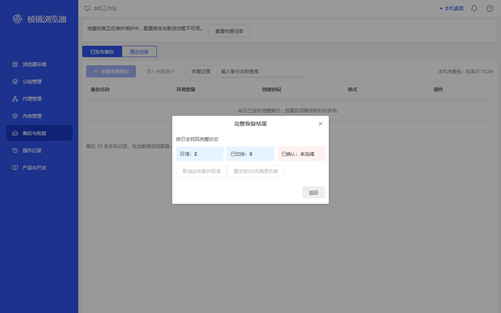
0b28084a666f86153bb0a122fa87db8b42486fd9eb0a3aa9f435663699450d43
gap-local-native-restore-restart-protected · 1280×800
MAPPED — 合成切换目录退出日志投影，400px结果保留未完成/维护保护及日志副本指引，原任务收尾入口完整；recoveredOriginalOnly=false/newImports0，非真实重启或目录恢复验收。
同类参考容器：batch-progress-fixture；不是同名原商业执行。
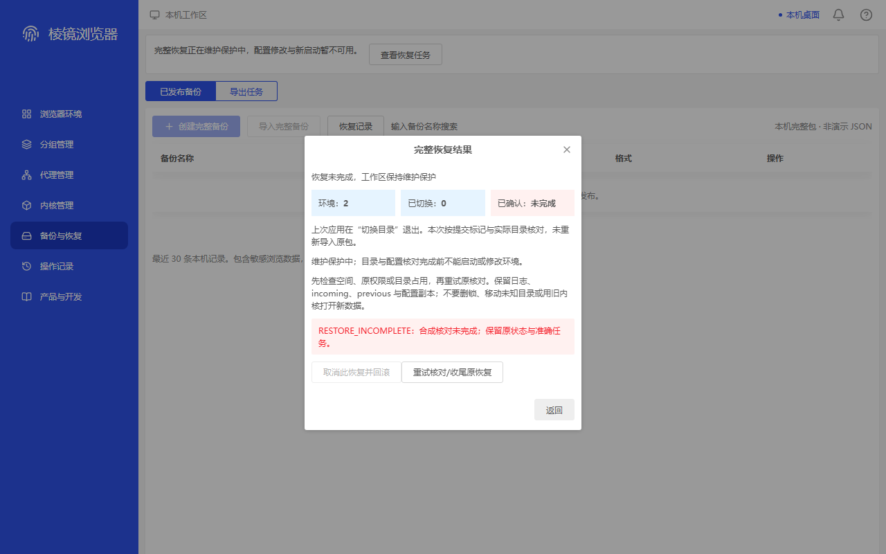
dd10bdd107cbe9a7d977a244ada0047b2c9ae94724b1bb9d4ca8fae2a1597eda
gap-local-native-restore-source-cancelled · 1280×800
MAPPED — 合成取消来源选择仍尚未选择，取消提示/只读范围完整、预览禁用且未恢复；500px上传窗footer可达。不是真实选择器操作，仅文件容器映射。
同类参考容器：proxy-import-file；不是同名原商业执行。
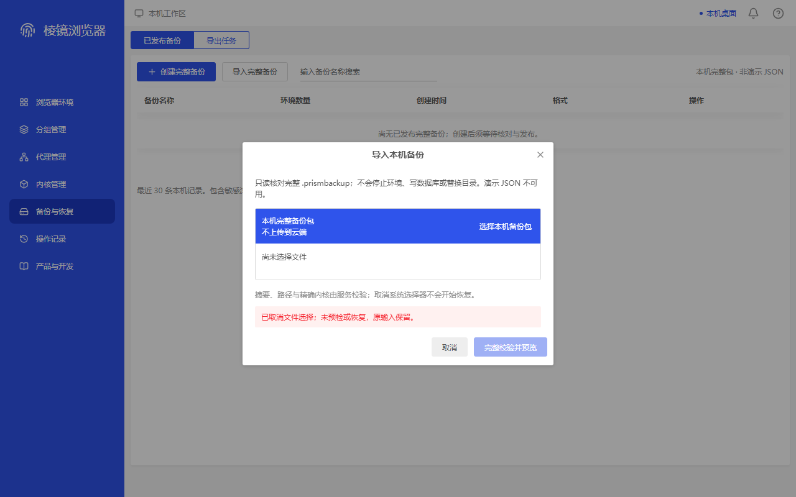
5671e3548217a50909fe7238fd8f2a2fdc40e320cb881764c1289800e6cf6e46
gap-local-native-restore-source-preflight-failed · 1280×800
MAPPED — 合成来源文件名保留、BACKUP_INVALID失败红条完整，可重试只读预检且无恢复提交；500px上传/footer未遮挡。仅文件窗失败投影，不是实际包校验。
同类参考容器：proxy-import-file；不是同名原商业执行。
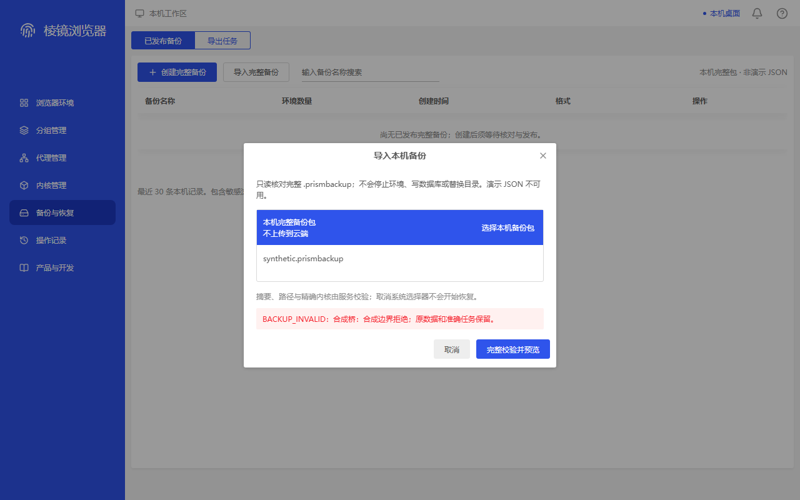
245d4c737d379d88f8d7230854338d9dd1d531eb4e55295e3441b4c1a932dcc9
gap-local-native-restore-source-reading · 1280×800
MAPPED — 合成只读预检挂起，文件名/正在流式读取说明保留，选择/重复预览受门禁而取消只读预检可用；未恢复。仅500px文件窗忙态，非文件系统读取证据。
同类参考容器：proxy-import-file；不是同名原商业执行。
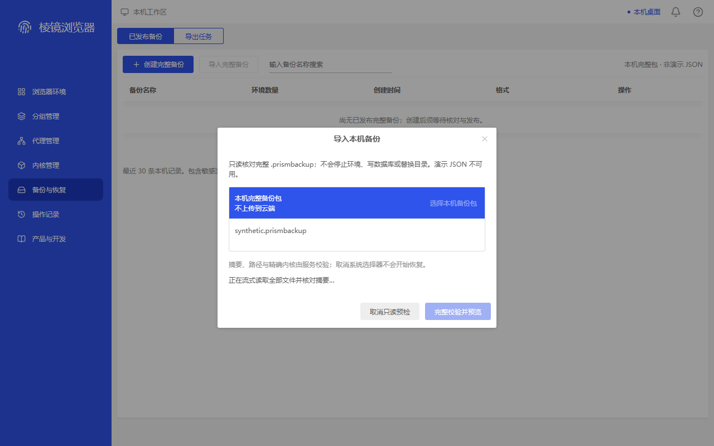
d20b4a84e18fa4baf901b721d25ef19766dd77da1359b87ce9f23b9687439f39
gap-local-native-restore-source-refused · 1280×800
MAPPED — 合成来源边界拒绝、尚未选择和红色原状态保留说明完整，预览禁用，没有伪造预检或恢复。仅500px上传容器映射，非真实包拒绝验收。
同类参考容器：proxy-import-file；不是同名原商业执行。
e82915d0de35ca3b50f3dee8c735dccc789e05d713c92bf04c37c2431176b881
gap-local-native-restore-source-selected · 1280×800
MAPPED — 合成完整包来源已选的文件名与可用只读预检主按钮一致，蓝头/能力说明/footer完整；尚未校验或恢复。仅500px文件选择窗映射，不是实际文件读取。
同类参考容器：proxy-import-file；不是同名原商业执行。
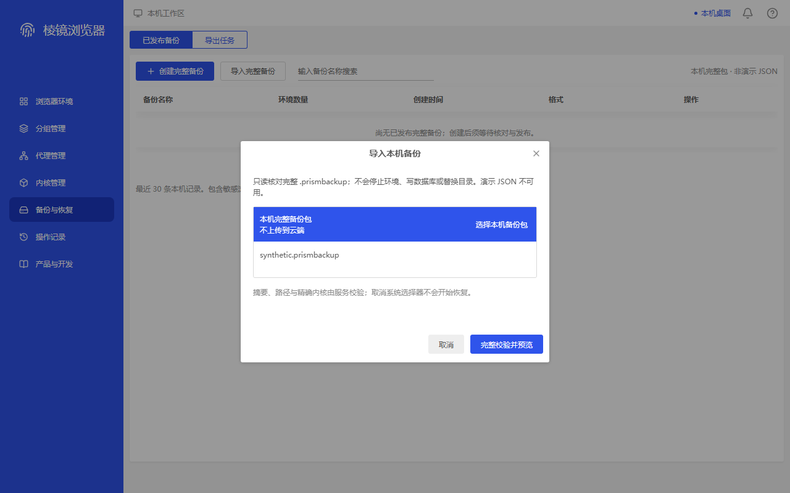
2e96fed3768678f3b8bc903aba81ea44823560f58f1b0af5ca915bbfb39e3f27
gap-local-native-restore-storage-protected · 1280×800
MAPPED — 合成STORAGE_WRITE_FAILED与维护保护指引完整，已确认未完成、不能启动/修改，原任务收尾可用而取消禁用；400px结果不造成功。仅保护失败投影，非目录/存储恢复验收。
同类参考容器：batch-progress-fixture；不是同名原商业执行。
c2d5afe1ba4f395e41ff48a46b84398229a81f0ad1581aceef513e6c2d838704
gap-local-native-restore-workspace-recovery · 1280×800
MAPPED — 合成目录已核对但其余本机记录仍恢复中，统计未完成/维护条保留，重复取消/收尾禁用，返回可达；仅400px结果映射，不把局部核对说成完整恢复。
同类参考容器：batch-progress-fixture；不是同名原商业执行。
9449f956781962e1fc48b692a5ad1926cb2db8803d3e6c01bec2fa5d30cb1106
gap-local-demo-activity-failed-detail-bottom · 1440×900
MAPPED — 演示长失败详情620×440；正文342/594/252到底，错误码/核实原请求下一步及y620返回footer可读，无会话控制。仅620px原容器映射，不是真实失败恢复验收。
同类参考容器：proxy-edit；不是同名原商业执行。
8308f734ae6f607e32eb6dc1118ac257b0a9dde18685b581fa7ac5d3b25afa02
gap-local-demo-activity-filters-bottom · 1440×900
MAPPED — 演示24条活动第一页末行/分页完整，结果文字保留未确认，demo导出入口可见；高视口容纳更多表行，不等于一次展示全部记录。仅活动列表映射。
同类参考容器：activity-list；不是同名原商业执行。
435f5674943b8d53f187f1352cf8ecfeb92bdf6cdfdbb3f9084f397170737b25
gap-local-demo-backup-chooser-focus · 1440×900
MAPPED — 500×359演示JSON上传窗在高视口保持蓝头白字、未选/禁用预览及固定footer。focused保存断言有效但outline none，未打开chooser；仅文件选择容器映射。
同类参考容器：proxy-import-file；不是同名原商业执行。
a429948a8c750708b60594ca01bbb99ce3f57095cba776ec9977f5fbc232a17d
gap-local-demo-backup-empty-search · 1440×900
MAPPED — 演示快照搜索空态的查询文字/空行/共0条一致，JSON边界和分页完整；重置保留原快照为保存断言，不把筛空说成删除。仅管理列表映射。
同类参考容器：proxy-list；不是同名原商业执行。
be2bd64ff48bd16b3253914c3bdf36e3efbbe974f8f11418ca6b6ab84189ebf6
gap-local-demo-backup-file-oversize · 1440×900
MAPPED — 合成演示文件名和10MB超限说明完整，固定500px上传窗footer可达；保存断言读取前拒绝，未出恢复预览或修改工作区。仅文件容器映射。
同类参考容器：proxy-import-file；不是同名原商业执行。
e5e0a7a7b63439c89d89046cb35b2226d3c0ad7c3b74579ae47532756784b64c
gap-local-demo-backup-file-read-failed · 1440×900
MAPPED — 合成File读取失败红条与原文件名保留，重试/取消footer完整，没有假预览或成功；500px文件窗有当前失败依据，不是实际文件系统故障验收。仅容器映射。
同类参考容器：proxy-import-file；不是同名原商业执行。
f8b48b65acf07d1623b152c1dc474c85be1e974b12763df700e26e65a258774a
gap-local-demo-backup-file-reading · 1440×900
MAPPED — 演示合成File读取在途文字/文件名完整，取消/重复预览禁用且未造预览，固定footer无遮挡。仅上传窗当前忙态，不是读取完成或真实文件证据。
同类参考容器：proxy-import-file；不是同名原商业执行。
f9a5d17c89fcf98c8e25d905ea19c5f226da7a46dccd295d35711c1d0e85f25b
gap-local-demo-backup-file-selected-cancel · 1440×900
MAPPED — 已选合成文件再次取消后提示与原名称都在，预览仍可用且未读取/恢复；500px蓝色上传头与footer完整。仅取消状态/文件窗映射。
同类参考容器：proxy-import-file；不是同名原商业执行。
d9596b86a2a2bbe1d842a58b2bd6363abbd3eca363c962d3a4be63bbae634ef5
gap-local-demo-restore-busy-union · 1440×900
MAPPED — 新实际演示启停+两次完成写入拒绝得到三忙态，400px确认明确先停3个且恢复禁用；下层预览inert/单遮罩，未恢复、原持久数据不变。旧boot/retry错误仍保留，仅确认映射。
同类参考容器：group-delete-confirm；不是同名原商业执行。
acf9678f646b6d5f4b36e84ff919fd0df276eab91bffd96922a8b52e06f47cbd
gap-local-demo-restore-zero-preview · 1440×900
MAPPED — 合法零项演示快照1040×592只读预览在200/162，零数量/仍替换配置和固定footer完整，尚未恢复。原列表容器映射，不当作native完整包或结果。
同类参考容器：proxy-bound；不是同名原商业执行。
e57bf06305489d63f33470e9f25b91c3509bf64f537993250668865b89af4f2b
gap-local-native-activity-authority-no-controls · 1440×900
MAPPED — 合成无force资格末态的620px详情只读，准确会话权限说明/返回完整，无核对或force授权。四分支仅保存动作断言，非四个同名原状态；仅详情容器映射。
同类参考容器：proxy-edit；不是同名原商业执行。
1bafb9a96457e73b9cb7d57e17c99791a3bd6b7baea30c5fe2759c8b17cc7311
gap-local-native-activity-blocked-owned-force · 1440×900
MAPPED — 合成准确会话canForce但同环境Reconcile在途，force/核对禁用且调用0，详情正文/footer完整；不替换旧force确认判定。仅授权投影与620px容器映射。
同类参考容器：proxy-edit；不是同名原商业执行。
585cd6f87cd50d1580487b8144e3970b959623f847c77f27dc13e3ecbc2a0519
gap-local-native-activity-empty · 1440×900
MAPPED — 合成native活动空行/0条分页、结果筛选与诊断入口完整，没有demo导出；表头和密集管理原语对应。仅空态列表映射，不是真实日志读取证据。
同类参考容器：activity-list；不是同名原商业执行。
7c06b07cf052bd729eed0199bbb63cf959ceb6bb032aaa0f3551cf205981c8bb
gap-local-native-activity-failed-detail-bottom · 1440×900
MAPPED — 合成长失败详情342/638/296到底，错误码/原请求指引和历史非当前控制权可读，y620 footer完整、会话动作0。仅620px详情映射，非失败恢复已运行。
同类参考容器：proxy-edit；不是同名原商业执行。
be3f72646ed7a27fec474abe62cc8734613f72f95c93f22e58c3372335f1d648
gap-local-native-activity-filters-bottom · 1440×900
MAPPED — 24条合成活动第一页10行/分页完整，已完成/失败/未确认文字有区分，native操作为诊断非演示导出。过滤复原是保存断言；仅列表原语映射。
同类参考容器：activity-list；不是同名原商业执行。
4d842c3173071275981a321d75ba7652b521c2430b29ef449b012b7acd440ac1
gap-local-native-activity-page-two · 1440×900
MAPPED — 合成活动第二页11–20十项与分页2/共24一致，末行和诊断入口无遮挡，不用更高视口冒充全量记录。仅原活动页分页/行原语映射。
同类参考容器：activity-list；不是同名原商业执行。
b38e4fa0c3740afee42fff4abaabd643a321b65eda3dc7e1f84c311c7c68b142
gap-local-native-backup-admission-refused · 1440×900
MAPPED — 合成PROFILE_BUSY拒绝回500×340备份表单，原范围/目标/停止授权和红色说明完整可编辑；没有总体成功或新任务。仅group-add短表单映射。
同类参考容器：group-add；不是同名原商业执行。
0d199317e8237a573ff9890cf8303dd986c516004787c376832e0a463a81f773
gap-local-native-backup-cancel-requested · 1440×900
MAPPED — 合成备份取消已请求仍任务未确认，发布否与原结果读取/返回完整，未把取消请求写成完成。仅400px批次结果块映射，不是真实打包/取消执行。
同类参考容器：batch-progress-fixture；不是同名原商业执行。
4c9e8499ae39339f34bfc3432853e28c76ff7f5a6c9cfaec47f9a9f54cba7e99
gap-local-native-backup-chooser-focus · 1440×900
MAPPED — 合成本机完整包500×359上传窗蓝头白字、未选和禁用预览/footer完整；focused有保存断言、outline none，不声称新焦点环或实际系统chooser。仅文件窗映射。
同类参考容器：proxy-import-file；不是同名原商业执行。
e4204cbc57ba599358484f0b47a10f43020f065f0e2238d1ca36aa6ed653502f
gap-local-native-backup-destination-cancelled · 1440×900
MAPPED — 合成目标取消保持尚未选择、正常停止授权及取消提示，500px主导出禁用/调用0；无ID option disabled来自DOM断言而非折叠控件外观。仅目标表单映射。
同类参考容器：group-add；不是同名原商业执行。
fb24daeccb0827698338cf14a36c61675c70e051fdf0e242e1761c599cb20cd3
gap-local-native-backup-destination-missing-consent · 1440×900
MAPPED — 合成目标已选仍缺停止授权，主导出禁用、范围不变/调用0；无ID选项DOM disabled，没有放宽产品门禁。固定500px表单/footer完整，非实际备份，仅容器映射。
同类参考容器：group-add；不是同名原商业执行。
8bb4af6642ff65422823b8d9e961a440cdbca82f0bbdce2001b4ff8bd4f6ec23
gap-local-native-backup-destination-refused · 1440×900
MAPPED — 合成目标选择被拒绝后原范围/尚未选择/正常停止授权及失败说明保留，导出禁用/调用0，footer完整。仅500px短表单映射，不是真实chooser权限验收。
同类参考容器：group-add；不是同名原商业执行。
df478f6f395a51584bde7eb4a8e82fcdefa60928575a4d393636be65f30c2e1d
gap-local-native-backup-incomplete-report · 1440×900
MAPPED — 合成缺发布事实的completed回执被拒绝，原任务/待核实和BACKUP_RESULT_UNCONFIRMED红条可读，返回可达；没有完整备份成功。仅400px结果块映射。
同类参考容器：batch-progress-fixture；不是同名原商业执行。
70855a8f1de6b99c2f4affcb7dee5e0568fc9938fbf4243a49cdbf4917d91d01
gap-local-native-backup-interrupted · 1440×900
MAPPED — 合成备份中断/BACKUP_INCOMPLETE与发布否、原结果读取入口完整，400px正文/返回不被遮挡。仅明确失败结果映射，非真实完整包发布或修复证明。
同类参考容器：batch-progress-fixture；不是同名原商业执行。
2f848ac4e2472b14b494fe03a7b4711524c1551db3986268b5ae84266f06c727
gap-local-native-backup-publication-pending · 1440×900
MAPPED — 合成发布是但原任务仍记录待保存/未确认，取消禁用、读取原结果和返回可用；局部发布统计不升格为总体成功。仅400px结果映射，无文件发布核验。
同类参考容器：batch-progress-fixture；不是同名原商业执行。
893147be6e92e4e17dc38c0114c4429f7d2acfe2281eda89dd1bc81c4a589168
gap-local-native-backup-publishing · 1440×900
MAPPED — 合成正在发布仍发布否、取消不可用，原结果读取/返回完整；400px结果保留任务未确认。仅在途结果块映射，不是写出完整文件或发布完成。
同类参考容器：batch-progress-fixture；不是同名原商业执行。
704e3f1aad9123a364bf861f154b406296978712dde463e0d37d1953b4c2b348
gap-local-native-backup-read-failure-retry · 1440×900
MAPPED — 当前同ID读取失败红色说明/返回与原结果入口完整；保存动作先恢复读再重注入失败、导出重试0，最终图不能说成已成功重读。仅400px结果块映射。
同类参考容器：batch-progress-fixture；不是同名原商业执行。
d506296cc338180119f33716139dda865c1896709bf8a97ba7c092b85f027e81
gap-local-native-backup-storage-pending · 1440×900
MAPPED — 合成任务记录待保存、发布否与STORAGE_WRITE_FAILED红条可读，原结果读取/固定返回完整；仍是未确认而非绿色成功。仅400px结果映射，非存储恢复验收。
同类参考容器：batch-progress-fixture；不是同名原商业执行。
269f3288c39068f9f3ee74e20b88cd45ab078c9a501ebda6a68e80ba3bb9398a
gap-local-native-backup-tasks-dense-bottom · 1440×900
MAPPED — 合成导出任务第一页10项在高视口完整，末任务10/共12条分页和任务标签一致，未冒充已发布包。仅管理列表密集行/固定分页原语映射，无新导出。
同类参考容器：proxy-list；不是同名原商业执行。
5422f28b7e88c1fba13662c773a6130b088bb3c38998efb316f674d72a844703
gap-local-native-backup-tasks-empty · 1440×900
MAPPED — 合成导出任务标签选中、0任务专用空提示及分页完整，和已发布包空态区分。仅管理列表空态映射，不宣称本机任务/包已真实核实。
同类参考容器：proxy-list；不是同名原商业执行。
575fd2dd285d3294ac685657976c1c8dc9fbccecfbf267479aa0c624082ffa7b
gap-local-native-backup-tasks-nonmatch · 1440×900
MAPPED — 合成12条导出任务搜索不匹配，查询文字/空提示/0条分页和任务标签一致，原任务未删除；footer/表头完整。仅管理列表原语映射。
同类参考容器：proxy-list；不是同名原商业执行。
92936da8afcf6b2f5aa37003f5705b4c1b6b8d366aa743c5c925802fddc76c5a
gap-local-native-backup-tasks-page-two · 1440×900
MAPPED — 12个合成导出任务第2页仅11/12，读取入口与共12条分页一致，空余空间为真实少行非漏图。仅分页列表映射，不是完整包发布列表或真实备份。
同类参考容器：proxy-list；不是同名原商业执行。
b2565018aede28964c9169b4a7957cb16879769f5ac4d7d803f3c723ab10b866
gap-local-native-diagnostic-dense-bottom · 1440×900
FAIL — 末行补证不足：外正文482/606/124到底、y690 footer和15分钟说明完整，但内层仍任务1–9/部分10，未见内核20/遗漏7。220个li不等于尾段可见；需新内层滚底图，非产品源码缺陷证明。
同类参考容器：proxy-edit；不是同名原商业执行。
14a8622149c69480de7739ae8f515029673beb53d121f975f31ffbc02e481a61
gap-local-native-diagnostic-generating · 1440×900
MAPPED — 合成诊断Preview在途只有正在生成/安全范围，未填假报告且保存禁用，620×580固定footer完整；仅诊断容器忙态映射，不是生成完成或native运行证据。
同类参考容器：proxy-edit；不是同名原商业执行。
e2903fe7e166a9ee94da2559392aa01e4eb026e9ac56069b4b2b9d3e50785835
gap-local-native-diagnostic-original-retry-end · 1440×900
MAPPED — 最新单案例合同的原报告重试/显式结束结果保留旧文件可能已发布；400px返回/查看预览完整，无新报告/chooser。仅结果映射，旧严格工具错误保留，非文件删除或写盘证明。
同类参考容器：batch-progress-fixture；不是同名原商业执行。
95b3840dc9dd4366bc486e21e559c17104ba34cb7b962e3369979a0f3804bac3
gap-local-native-diagnostic-preview-error · 1440×900
MAPPED — 合成诊断预览STORAGE_READ_FAILED红条、返回与禁用保存完整，没有有效假报告。仅620px安全错误容器映射，不是真实工作区故障读取或恢复验收。
同类参考容器：proxy-edit；不是同名原商业执行。
524250af3140e445bd31973b392719a84f63cccb3de8623f5ff19dab8d2605b2
gap-local-native-diagnostic-save-busy · 1440×900
MAPPED — 合成原Export挂起仍核对原保存/原请求待核实，核实和结束禁用，返回保留；400px结果完整且无第二份报告。仅保存忙态映射，非文件写出/发布证明。
同类参考容器：batch-progress-fixture；不是同名原商业执行。
c2e30f1348c3237105d492f7ccd0990121256df36161277748df8bfdb7fbe4ed
gap-local-native-restore-add-only-ack · 1440×900
MAPPED — 合成只新增2项确认仅正常停止授权，400×202正文完整，全选后可提交但ApplyRestore=0；最高124/下层122 inert、单遮罩。内容差异有依据，仅危险确认容器映射。
同类参考容器：group-delete-confirm；不是同名原商业执行。
3dacab293f0133cdc7c65a23d749593dcc8888a2990d8228f258848f6df4f37c
gap-local-native-restore-cancel-requested · 1440×900
MAPPED — 合成恢复取消已请求仍显示新旧准备/未完成，重复取消门禁/返回完整；400px统计不当成已回滚或已取消。仅结果块当前状态映射，无真实目录证据。
同类参考容器：batch-progress-fixture；不是同名原商业执行。
17e11a9b79c05a38b59605494f050c6e09008a185de56e41cd09a8687a9be44e
gap-local-native-restore-cancelled · 1440×900
MAPPED — 合成已取消恢复、未完成统计及返回完整，没有重复取消或总体成功入口；400px短结果有真实内容依据。仅取消终态容器映射，不是真实回滚完成验收。
同类参考容器：batch-progress-fixture；不是同名原商业执行。
c7263374800075262a600f45b9c58ac726c53be1796cdb37e20816d092d9316d
gap-local-native-restore-credentials-bottom · 1440×900
MAPPED — 合成凭据内表230/1626/1396、正文494/539/45到底，末项/需重输红条及y696固定footer完整，不回显凭据，下一步禁用/恢复0。仅1040px预检列表窗映射。
同类参考容器：proxy-bound；不是同名原商业执行。
8f09f19f696722266302410128eb412ad6ad018328cfa8dc59f4a5c2c85012c5
gap-local-native-restore-credentials-top · 1440×900
MAPPED — 合成凭据top的表头/前段重输和不可解密状态可读，下一步禁用且无凭据值；top未展示尾项，不替代独立bottom。仅1040px预检窗口原语映射。
同类参考容器：proxy-bound；不是同名原商业执行。
5446ecfc1dd4cbc2e5fb707e2bdf7df1ae904aa35f42012410d6f93a5ac5770b
gap-local-native-restore-discard-unconfirmed · 1440×900
MAPPED — 合成预检丢弃未确认保留原影响/来源、SOURCE_INVALID红条完整，下一步禁用、丢弃/关闭仍有入口；未恢复。仅1040px未知丢弃状态映射，非取消成功。
同类参考容器：proxy-bound；不是同名原商业执行。
a4fc89dcee67dbb112acb9d23646b605c4dea1aef853d6e84933ec11443e708c
gap-local-native-restore-each-required-ack · 1440×900
MAPPED — 合成400×262确认三个独立授权勾选完整；逐个撤回均禁用主提交是保存断言，当前全选仍未ApplyRestore。下层预检inert/单遮罩，仅危险确认映射。
同类参考容器：group-delete-confirm；不是同名原商业执行。
3cc116e67c452712e2be10756483b7a9ac6eb51fc6a785aca8e6a0b48b1800cd
gap-local-native-restore-empty-impact · 1440×900
MAPPED — 合成1040×592只读预检0影响/0–0/0，空行、包摘要和原ID/seed不变说明完整；ApplyRestore=0，不造新身份或成功结果。仅空列表窗口映射。
同类参考容器：proxy-bound；不是同名原商业执行。
bd4fef82d03067bc7cea90970b142718e01ca30f9a25ffe2af614017341752cf
gap-local-native-restore-finalized-unconfirmed · 1440×900
MAPPED — 合成完整提交待核实虽已切换2仍未确认完成，维护条/原任务收尾保留，取消禁用且返回可达。仅400px结果块映射，不将局部切换宣称整体成功。
同类参考容器：batch-progress-fixture；不是同名原商业执行。
3cb2ad3ef604fbfba92c72fde56ed9e91d3a115dbf89abcd7b7be061a95c1f44
gap-local-native-restore-history-dense-bottom · 1440×900
MAPPED — 合成30条历史内表230/1800/1570到底，末27–30项与不消费未知请求/后续会话说明完整，y696返回固定。仅1040px历史容器映射，不是恢复/取消动作。
同类参考容器：proxy-bound；不是同名原商业执行。
d75e03ceaeb353cb571ed3fd0867cc6863ca2841ca10d250ea37e5ae4284f97f
gap-local-native-restore-history-empty-retained · 1440×900
MAPPED — 合成最近历史空表有真实入口/暂无已读说明，保存状态仍保留已观察任务，返回和不接管后续会话指引完整。仅历史空态映射，不把列表空说成原任务已消失。
同类参考容器：proxy-bound；不是同名原商业执行。
622693b6e4c8eeb15a1fbb2e8421427d688ab209b80e7d41c6ac7e8fa721ad30
gap-local-native-restore-kernels-bottom · 1440×900
MAPPED — 合成内核表230/1452/1222、正文494/511/17到底，末项同摘要映射与补齐版本/校验值红条可读，下一步禁用；未安装/签名验证。仅1040px预检列表窗映射。
同类参考容器：proxy-bound；不是同名原商业执行。
835e40fb9bac339d4aeca5525e277c99b71f4485c4242e060a408b6619cd9c57
gap-local-native-restore-kernels-top · 1440×900
MAPPED — 合成内核top表头和未绑定/缺失/无法核对前段完整，摘要列正常换行，下一步禁用；top不是末行，安装与精确映射能力不混淆。仅1040px预检窗映射。
同类参考容器：proxy-bound；不是同名原商业执行。
5ca596653403c5ee23641a94f41ea8d81b7d772362de256e16fceb83309d3801
gap-local-native-restore-not-accepted · 1440×900
MAPPED — 合成RESTORE_NOT_ACCEPTED红条和返回影响确认可读，明确未受理不沿用未知请求控制入口，原预检保留。仅400px结果容器映射，不是本机恢复执行结果。
同类参考容器：batch-progress-fixture；不是同名原商业执行。
4a076e3e1429c058ae4ede10d81d5815a160c34b0383654cae9c4a92b0f3041d
gap-local-native-restore-recovering · 1440×900
MAPPED — 合成日志恢复中明确未完成和维护保护，重复取消/收尾禁用、返回完整；400px结果没有总体绿色成功。仅进行中状态/容器映射，不是真实日志恢复验收。
同类参考容器：batch-progress-fixture；不是同名原商业执行。
50158803b026caa0c65a726aaeb47f6f41f58aaa0025c6107b04c558a52b9c0b
gap-local-native-restore-restart-protected · 1440×900
MAPPED — 合成上次切换目录退出、未重导入原包/保留副本和维护保护指引完整，原任务收尾入口可见；recoveredOriginalOnly=false，非真实重启或目录恢复。仅400px保护结果映射。
同类参考容器：batch-progress-fixture；不是同名原商业执行。
4acf2b80c6f2e23c4476e0f35b4dbf81ae059293e1041c5abbbf61580a0d8bb6
gap-local-native-restore-source-cancelled · 1440×900
MAPPED — 合成来源取消后尚未选择/取消提示完整，预览禁用、未恢复，500px上传头及固定footer保留。仅文件窗取消状态映射，不是真实系统chooser或包操作。
同类参考容器：proxy-import-file；不是同名原商业执行。
8d72f6d10d21a48676cc045202a0ec3326b1519a5665fb7ab192571f61118856
gap-local-native-restore-source-preflight-failed · 1440×900
MAPPED — 合成BACKUP_INVALID只读预检失败，原文件名/错误说明与可重试入口完整，恢复未提交；固定500px文件窗不造预览或成功。仅文件失败状态映射。
同类参考容器：proxy-import-file；不是同名原商业执行。
41d49882d5101d2e2a47936fb4e0c938cffdf395d3153ba5b508167f21207b8e
gap-local-native-restore-source-reading · 1440×900
MAPPED — 合成只读预检流式读取在途，文件名/状态完整，选择/重复预览禁用而取消只读预检可用，未恢复；仅500px上传窗忙态映射，无真实FS读取。
同类参考容器：proxy-import-file；不是同名原商业执行。
05ce278e2f6f0b77ec4b83c357029923162ed95fc8a72a57d29a5dc81aaac6ad
gap-local-native-restore-source-refused · 1440×900
MAPPED — 合成来源拒绝提示/尚未选择/禁用预览完整，取消footer可达，没有假预检或恢复结果。仅500px文件窗映射，非真实本机文件授权拒绝验收。
同类参考容器：proxy-import-file；不是同名原商业执行。
dc6de6fed40d04e3de939660031c8904bfb126672ff4dbe3a0e06bc879087f8b
gap-local-native-restore-source-selected · 1440×900
MAPPED — 合成本机包已选的文件名与只读预检可用按钮一致，500px蓝头/不上传和完整包边界/footer可读；尚未校验或恢复。仅文件选择窗映射，不是实际包读取。
同类参考容器：proxy-import-file；不是同名原商业执行。
0208d7d604355ff24f0a0d5042718fd0c1d083d55b1033e03cc65ed0762d96cd
gap-local-native-restore-storage-protected · 1440×900
MAPPED — 合成STORAGE_WRITE_FAILED与维护保护/保留日志副本说明完整，未完成、取消禁用且原任务收尾可用；400px结果不掩盖失败。仅保护投影，非真实目录/存储恢复验收。
同类参考容器：batch-progress-fixture；不是同名原商业执行。
7fcd0461798ca0ac0fe0104f71f8514f8ef505ed8a373252b9f2b033b8fa6d00
gap-local-native-restore-workspace-recovery · 1440×900
MAPPED — 合成目录已核对但本机其余记录仍恢复中，未完成统计/维护条和返回完整，重复取消/收尾受门禁。仅400px结果块映射，不将局部目录事实升格为完整恢复。
同类参考容器：batch-progress-fixture；不是同名原商业执行。
d1d7d9515fb8f13da87c9fab7a4b8ee7535e622a72109e9b03c7cd96bc1d18f0